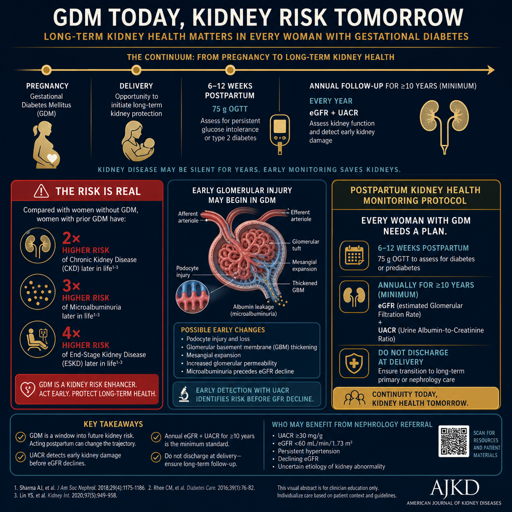
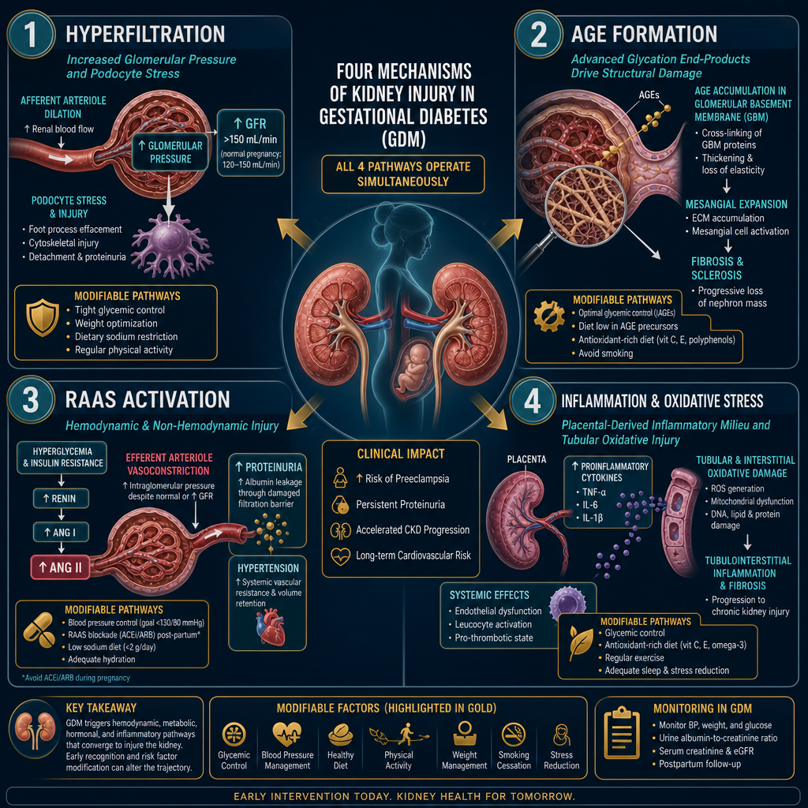
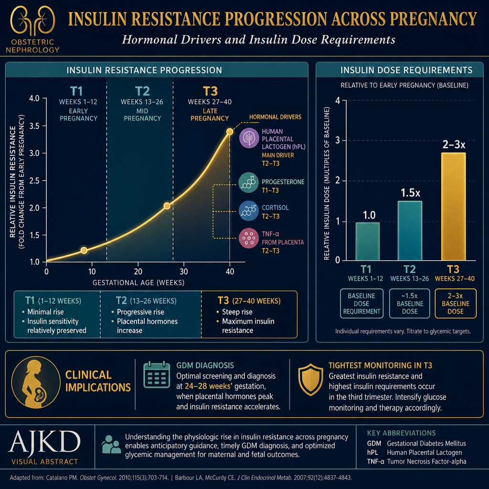
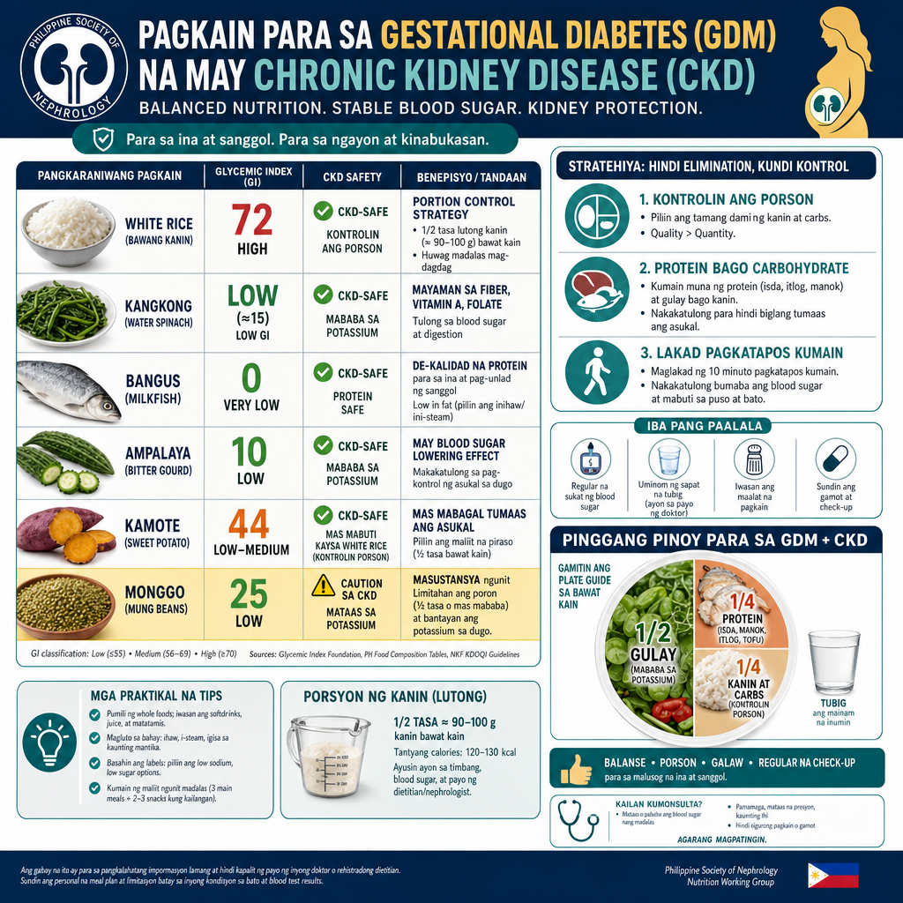
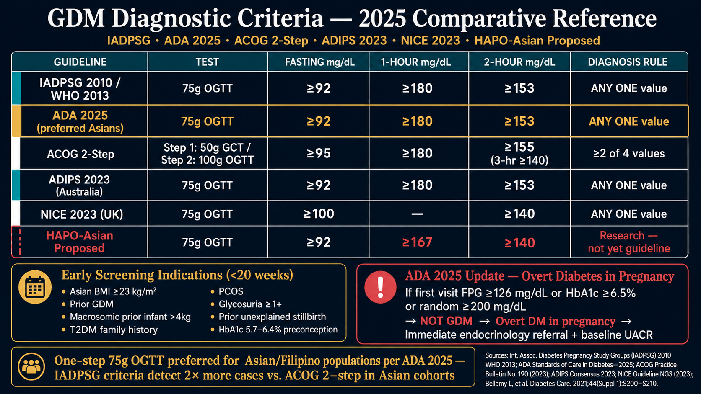

Why a Nephrologist Cares Deeply About GDMBakit Lubos na Pinahahalagahan ng Nephrologist ang GDMNgano Labi ka Nagtagad ang Nephrologist sa GDMBakit Lubos na Pinahahalagahan ning Nephrologist ing GDM
In a standard GDM consultation, the focus is on blood sugar targets, insulin dosing, and fetal macrosomia prevention. These are critically important. But there is a parallel story that does not get told: a woman who has had GDM carries a 7-fold higher lifetime risk of developing Type 2 diabetes — and with that, a significant lifetime risk of diabetic kidney disease (DKD). The nephrology story of GDM begins with the very first abnormal glucose in pregnancy and does not end at delivery.Sa isang karaniwang konsultasyon sa GDM, ang pokus ay sa mga target na asukal sa dugo, dosis ng insulin, at pag-iwas sa fetal macrosomia. Ito ay kritikal na mahalaga. Ngunit may kasamang kuwentong hindi sinasabi: ang isang babae na nagkaroon ng GDM ay may 7 beses na mas mataas na panghababuhay na panganib ng pagkakaroon ng Type 2 diabetes — at kasama nito, isang makabuluhang panghababuhay na panganib ng diabetic kidney disease (DKD). Ang kwento ng nephrology ng GDM ay nagsisimula sa unang abnormal na glucose sa pagbubuntis at hindi natatapos sa panganganak.Sa usa ka sumbanan nga konsultasyon sa GDM, ang pokus mao ang mga target sa asukal sa dugo, dosis sa insulin, ug pagpugong sa fetal macrosomia. Kini kritikal nga importante. Apan adunay kasamang istorya nga wala gisulti: ang usa ka babaye nga adunay GDM adunay 7 ka beses nga mas taas nga pangkinabuhing peligro sa pagpalambo sa Type 2 diabetes — ug uban niini, usa ka makabubuhag nga peligro sa diabetic kidney disease (DKD). Ang istorya sa nephrology sa GDM nagsugod sa unang abnormal nga glucose sa pagmabdos ug dili matapos sa panganganak.Sa metung a karaniwang konsultasyon sa GDM, ing pokus ya sa deng target na asukal sa daya, dosis ning insulin, at pag-iwas sa fetal macrosomia. Ini ya kritikal na mahalaga. Ngarud may kasamang kuwentong ali sinasabi: ang metung a babae na nagkaroon ning GDM ya may 7 beses na mas matas a panghababiye na panganib ning pagkakaroon ning Type 2 diabetes — at kasama nini, metung a makabuluhang panghababiye na panganib ning diabetic kidney disease (DKD). Ing kwento ning nephrology ning GDM ya nagsisimula sa unang abnormal na glucose sa pagbubuntis at ali natatapos sa panganganak.
The kidney is uniquely vulnerable during pregnancy: glomerular filtration rate increases by 40–50% (hyperfiltration), urinary protein excretion normally rises, and the diabetic milieu — hyperglycemia, insulin resistance, and oxidative stress — begins its work on the glomerular filtration barrier from the moment of diagnosis. Managing GDM well is not just about a healthy delivery. It is about preventing or delaying the onset of diabetic kidney disease for the next 20–40 years.Ang bato ay natatanging mahina sa panahon ng pagbubuntis: ang glomerular filtration rate ay tumataas ng 40–50% (hyperfiltration), ang pagtatapon ng protina sa ihi ay normal na tumataas, at ang diabetic milieu — hyperglycemia, insulin resistance, at oxidative stress — ay nagsisimula ng gawain nito sa glomerular filtration barrier mula sa sandali ng diagnosis. Ang maayos na pamamahala ng GDM ay hindi lamang tungkol sa malusog na panganganak. Ito ay tungkol sa pag-iwas o pagpapaliban ng simula ng diabetic kidney disease para sa susunod na 20–40 taon.Ang kidney labi ka huyang sa panahon sa pagmabdos: ang glomerular filtration rate motubo og 40–50% (hyperfiltration), ang pagtapon sa protina sa ihi normal nga motubo, ug ang diabetic milieu — hyperglycemia, insulin resistance, ug oxidative stress — nagsugod sa trabaho niini sa glomerular filtration barrier gikan sa higayon sa diagnosis. Ang maayong pagdumala sa GDM dili lamang mahitungod sa malusog nga panganganak. Kini mahitungod sa pagpugong o pagpalangan sa pagsugod sa diabetic kidney disease alang sa sunod nga 20–40 ka tuig.Ining batu ya natatanging mahina sa panahon ning pagbubuntis: ing glomerular filtration rate ya tumataas ning 40–50% (hyperfiltration), ing pagtatapon ning protina sa ihi ya normal na tumataas, at ing diabetic milieu — hyperglycemia, insulin resistance, at oxidative stress — ya nagsisimula ning gawain nini sa glomerular filtration barrier mula sa sandali ning diagnosis. Ing maayos na pamamahala ning GDM ya ali lamang tungkol sa malusog na panganganak. Ini ya tungkol sa pag-iwas o pagpapaliban ning simula ning diabetic kidney disease para king susunod na 20–40 banua.

The kidney story of GDM does not end at delivery. Every woman who has had GDM should be followed with annual eGFR and UACR measurements for at least 10 years postpartum, in addition to the standard postpartum OGTT at 6–12 weeks.
Philippine burden — why this is urgentPasanin ng Pilipinas — bakit ito kagyatKarga sa Pilipinas — ngano kini kaabtikPasanin ning Pilipinas — bakit ini kagyat
The Philippines has one of the highest GDM prevalences in Southeast Asia — estimated at 12–15% of pregnancies in urban centers. Filipino women have a higher baseline insulin resistance due to the adiposity phenotype (significant visceral fat at lower BMI). A Filipino woman with GDM who does not modify her postpartum lifestyle has a greater than 50% lifetime probability of developing Type 2 diabetes — and with it, a substantial risk of diabetic kidney disease by age 50–60.Ang Pilipinas ay may isa sa pinakamataas na prevalensya ng GDM sa Timog Silangang Asya — tinatayang 12–15% ng mga pagbubuntis sa mga urban na sentro. Ang mga Pilipinang babae ay may mas mataas na baseline na insulin resistance dahil sa adiposity phenotype (makabuluhang visceral fat sa mas mababang BMI). Ang isang Pilipinang babae na may GDM na hindi binabago ang kanyang postpartum na pamumuhay ay may higit sa 50% na panghabambuhay na posibilidad ng pagkakaroon ng Type 2 diabetes — at kasama nito, isang malaking panganib ng diabetic kidney disease sa edad na 50–60.Ang Pilipinas adunay usa sa pinakataas nga prevalensya sa GDM sa Southeast Asia — gibanabana nga 12–15% sa mga pagmabdos sa mga urban nga sentro. Ang mga Pilipinang babaye adunay mas taas nga baseline nga insulin resistance tungod sa adiposity phenotype (makabubuhag nga visceral fat sa mas ubos nga BMI). Ang usa ka Pilipinang babaye nga adunay GDM nga wala magbag-o sa iyang postpartum nga kinabuhi adunay labaw sa 50% nga pangkinabuhing posibilidad sa pagpalambo sa Type 2 diabetes — ug uban niini, usa ka dakong peligro sa diabetic kidney disease sa edad nga 50–60.Ing Pilipinas ya may isa king pinakamatas a prevalensya ning GDM sa Timog Silangang Asya — tinatayang 12–15% ning deng pagbubuntis sa deng urban na sentro. Deng Pilipinang babae ya may mas matas a baseline na insulin resistance dahil king adiposity phenotype (makabuluhang visceral fat sa mas mababang BMI). Ing metung a Pilipinang babae na may GDM na ali binabago ing kanyang postpartum na pamumuhay ya may higit sa 50% na panghabambiye na posibilidad ning pagkakaroon ning Type 2 diabetes — at kasama nini, metung a malda a panganib ning diabetic kidney disease sa edad na 50–60.
What a nephrologist adds to GDM careAno ang idinaragdag ng nephrologist sa pag-aalaga ng GDMUnsa ang gidugang sa nephrologist sa pag-atiman sa GDMAno ing idinaragdag ning nephrologist sa pag-aalaga ning GDM
Standard GDM care (OB-GYN + endocrinologist) focuses on glucose targets, fetal surveillance, and delivery planning. A nephrologist adds: (1) evaluation of pre-existing subclinical kidney injury, (2) surveillance for gestational-hypertension-related glomerular damage, (3) microalbuminuria as an early DKD marker, (4) postpartum kidney function tracking, and (5) counseling on the 20-year renal trajectory that begins with GDM diagnosis.Ang karaniwang pag-aalaga ng GDM (OB-GYN + endocrinologist) ay nakatuon sa mga target ng glucose, pagsubaybay sa fetus, at pagpaplano ng panganganak. Ang nephrologist ay nagdaragdag ng: (1) pagsusuri ng pre-existing subclinical na pinsala sa bato, (2) pagsubaybay para sa glomerular damage na kaugnay ng gestational hypertension, (3) microalbuminuria bilang isang maagang DKD marker, (4) pagsubaybay ng function ng bato pagkatapos manganak, at (5) pagpapayo sa 20-taong renal trajectory na nagsisimula sa diagnosis ng GDM.Ang sumbanan nga pag-atiman sa GDM (OB-GYN + endocrinologist) nagpunting sa mga target sa glucose, pagmonitor sa fetus, ug pagplano sa panganganak. Ang nephrologist nagdugang og: (1) pagsusi sa pre-existing subclinical nga kadaot sa kidney, (2) pagmonitor alang sa glomerular damage nga may kalabotan sa gestational hypertension, (3) microalbuminuria isip sayo nga DKD marker, (4) pagmonitor sa function sa kidney human manganak, ug (5) pagpayo sa 20-tuig nga renal trajectory nga nagsugod sa diagnosis sa GDM.Ing karaniwang pag-aalaga ning GDM (OB-GYN + endocrinologist) ya nakatuon sa deng target ning glucose, pagsubaybay sa fetus, at pagpaplano ning panganganak. Ing nephrologist ya nagdaragdag ng: (1) pagsusuri ning pre-existing subclinical na pinsala sa batu, (2) pagsubaybay para king glomerular damage na kaugnay ning gestational hypertension, (3) microalbuminuria bilang metung a maagang DKD marker, (4) pagsubaybay ning function nining batu kapabanuan manganak, at (5) pagpapayo sa 20-banuag renal trajectory na nagsisimula sa diagnosis ning GDM.
How GDM Stresses the Kidney — The PhysiologyPaano Pinupuwersa ng GDM ang Bato — Ang PisyolohiyaGiunsa Pagpugos sa GDM ang Kidney — Ang PisyolohiyaPaano Pinupuwersa ning GDM ing Batu — Ing Pisyolohiya

All four mechanisms operate simultaneously during GDM. Tight glycemic control during pregnancy directly reduces AGE formation and hyperfiltration — the two most modifiable pathways. RAAS activation resolves substantially when insulin resistance improves postpartum.
Microalbuminuria during pregnancy — interpreting correctlyMicroalbuminuria sa panahon ng pagbubuntis — wastong interpretasyonMicroalbuminuria sa panahon sa pagmabdos — hustong interpretasyonMicroalbuminuria sa panahon ning pagbubuntis — wastong interpretasyon
Normal pregnancy increases urinary albumin excretion to up to 300mg/day due to physiologic hyperfiltration. A UACR (urinary albumin-to-creatinine ratio) >30 mg/g during pregnancy warrants attention but must be interpreted carefully — it may reflect normal gestational hyperfiltration rather than glomerular damage. The key distinguishing features: (1) onset timing relative to pregnancy progression, (2) associated hypertension (raises preeclampsia suspicion), (3) persistence >12 weeks postpartum. Postpartum UACR is the definitive baseline for nephrology monitoring.Ang normal na pagbubuntis ay nagpapataas ng pagtatapon ng albumin sa ihi hanggang 300mg/araw dahil sa physiologic hyperfiltration. Ang UACR (urinary albumin-to-creatinine ratio) na >30 mg/g sa panahon ng pagbubuntis ay nangangailangan ng pansin ngunit dapat bigyang-kahulugan nang maingat — maaari itong sumalamin sa normal na gestational hyperfiltration kaysa sa glomerular damage. Ang mga pangunahing katangian na nagtatangi: (1) timing ng simula kaugnay ng pag-unlad ng pagbubuntis, (2) kasamang hypertension (nagpapataas ng hinala ng preeclampsia), (3) pagpapatuloy >12 linggo pagkatapos manganak. Ang postpartum UACR ang tiyak na baseline para sa nephrology monitoring.Ang normal nga pagmabdos nagpataas sa pagtapon sa albumin sa ihi hangtod sa 300mg/adlaw tungod sa physiologic hyperfiltration. Ang UACR (urinary albumin-to-creatinine ratio) nga >30 mg/g sa panahon sa pagmabdos nanginahanglan og pagtagad apan kinahanglan interpretahon og maampingon — mahimong miresolba sa normal nga gestational hyperfiltration kaysa sa glomerular damage. Ang mga nag-una nga timailhan sa pagkalahi: (1) timing sa pagsugod kalabot sa pag-uswag sa pagmabdos, (2) kauyog nga hypertension (nagpataas sa pagdudahom sa preeclampsia), (3) pagpadayon >12 semana human manganak. Ang postpartum UACR ang tiyak nga baseline alang sa nephrology monitoring.Ing normal na pagbubuntis ya nagpapataas ning pagtatapon ning albumin sa ihi anggang 300mg/aldo dahil king physiologic hyperfiltration. Ing UACR (urinary albumin-to-creatinine ratio) na >30 mg/g sa panahon ning pagbubuntis ya nangangailangan ning pansin ngarud dapat bigyang-kahulugan nang maingat — maaari ining sumalamin sa normal na gestational hyperfiltration kaysa sa glomerular damage. Deng pangunahing katangian na nagtatangi: (1) timing ning simula kaugnay ning pag-unlad ning pagbubuntis, (2) kasamang hypertension (nagpapataas ning hinala ning preeclampsia), (3) pagpapatuloy >12 lutu kapabanuan manganak. Ing postpartum UACR ing tiyak na baseline para king nephrology moniniring.
Glycemic Targets in GDM — The Kidney-Protective RationaleMga Target ng Glycemic sa GDM — Ang Rasyonal na Nagpoprotekta sa BatoMga Glycemic Target sa GDM — Ang Rasyonal nga Nagpanalipod sa KidneyDeng Target ning Glycemic sa GDM — Ing Rasyonal na Nagpoprotekta sa Batu
![Your Blood Sugar Targets During GDM. Four timing cards: Before breakfast fasting less than 95 mg/dL; 1 hour after each meal less than 140 mg/dL — set a timer 60 minutes after first bite; 2 hours after each meal less than 120 mg/dL; Avoid going too low — never less than 70 mg/dL, signs of low sugar: shakiness sweating confusion. Bottom: why these numbers protect your kidneys — every spike above 140 makes kidneys work overtime; eat rice last — protein and vegetables first lowers 1-hour number by 30 points; walk 10–15 minutes after every meal; write down every reading bring logbook to OB visit.](../images/gdm-glucose-targets-patient.webp)
ADA 2025 glycemic targets for GDMMga glycemic target ng ADA 2025 para sa GDMMga glycemic target sa ADA 2025 alang sa GDMDeng glycemic target ning ADA 2025 para king GDM
- Fasting glucose:Glucose sa pag-aayuno:Glucose sa pagpuasa:Glucose sa pag-aayuno: <95 mg/dL (<5.3 mmol/L)
- 1-hour postprandial:1 oras pagkatapos kumain:1 oras human mokaon:1 oras kapabanuan kumain: <140 mg/dL (<7.8 mmol/L)
- 2-hour postprandial:2 oras pagkatapos kumain:2 oras human mokaon:2 oras kapabanuan kumain: <120 mg/dL (<6.7 mmol/L)
- HbA1c during pregnancy:HbA1c sa panahon ng pagbubuntis:HbA1c sa panahon sa pagmabdos:HbA1c sa panahon ning pagbubuntis: <6.0% (optional target — not primary monitoring tool in GDMopsyonal na target — hindi pangunahing tool sa pagmonitor sa GDMopsyonal nga target — dili nangunahang tool sa pagmonitor sa GDMopsyonal na target — ali pangunahing tool sa pagmoninir sa GDM)
- Avoid hypoglycemia:Iwasan ang hypoglycemia:Likayi ang hypoglycemia:Iwasan ing hypoglycemia: BG <70 mg/dL triggers risknagdudulot ng panganibnagdala og peligronagdudulot ning panganib
- Targets apply regardless of insulin use or diet-controlled statusNaaangkop ang mga target anuman ang paggamit ng insulin o status na kinokontrol ng diyetaAng mga target magamit bisan unsa ang paggamit sa insulin o status nga kinontrol sa diyetaNaaangkop deng target anuman ing paggamit ning insulin o status na kinokontrol ning diyeta
Why these specific numbers protect the kidneyBakit nagpoprotekta ang mga tiyak na bilang na ito sa batoNgano nagpanalipod kining tiyak nga mga numero sa kidneyBakit nagpoprotekta deng tiyak na bilang na ini sa batu
Each 1% reduction in mean glucose corresponds to a measurable reduction in glomerular hyperfiltration and AGE formation. The 140 mg/dL 1-hour postprandial target specifically limits the glucose "spike" — the peak glucose amplitude is the primary driver of glomerular oxidative stress, not just the average. Postprandial glucose spikes cause acute podocyte stress that fasting glucose targets alone do not capture. This is why SMBG (self-monitoring blood glucose) after meals — not just fasting — is the kidney-protective strategy.Ang bawat 1% na pagbaba ng mean glucose ay katumbas ng nasusukat na pagbaba ng glomerular hyperfiltration at AGE formation. Ang 140 mg/dL na 1-oras postprandial na target ay partikular na nililimitahan ang glucose "spike" — ang peak glucose amplitude ang pangunahing driver ng glomerular oxidative stress, hindi lamang ang average. Ang mga postprandial glucose spike ay nagdudulot ng acute podocyte stress na hindi nahahabol ng mga fasting glucose target lamang. Kaya naman ang SMBG (self-monitoring blood glucose) pagkatapos kumain — hindi lamang pag-aayuno — ang estratehiyang nagpoprotekta sa bato.Ang matag 1% nga pagkunhod sa mean glucose katumbas sa nasusukat nga pagkunhod sa glomerular hyperfiltration ug AGE formation. Ang 140 mg/dL nga 1-oras postprandial nga target espesipikong naglimitar sa glucose "spike" — ang peak glucose amplitude ang nangunahang driver sa glomerular oxidative stress, dili lamang ang average. Ang mga postprandial glucose spike nagdala og acute podocyte stress nga dili makuha sa mga fasting glucose target lamang. Mao kini ngano ang SMBG (self-monitoring blood glucose) human mokaon — dili lamang pagpuasa — ang estratehiya nga nagpanalipod sa kidney.Ing bawat 1% na pagbaba ning mean glucose ya katumbas ning nasusukat na pagbaba ning glomerular hyperfiltration at AGE formation. Ing 140 mg/dL na 1-oras postprandial na target ya partikular na nililimitahan ing glucose "spike" — ing peak glucose amplitude ing pangunahing driver ning glomerular oxidative stress, ali lamang ing average. Deng postprandial glucose spike ya nagdudulot ning acute podocyte stress na ali nahahabol ning deng fasting glucose target lamang. Kaya naman ing SMBG (self-moniniring blood glucose) kapabanuan kumain — ali lamang pag-aayuno — ing estratehiyang nagpoprotekta sa batu.
Timing of glucose monitoring — the nephrologist's preferenceTiming ng pagmonitor ng glucose — kagustuhan ng nephrologistTiming sa pagmonitor sa glucose — kagustuhan sa nephrologistTiming ning pagmoninir ning glucose — kagustuhan ning nephrologist
Standard GDM monitoring is fasting + 1-hour post-meal. From a nephrology standpoint, the 1-hour post-meal glucose is the most important single number — it captures the peak glycemic excursion that drives hyperfiltration and AGE formation most acutely. A patient with a normal fasting glucose but repeated 1-hour peaks of 160–180 mg/dL is accumulating significant cumulative glomerular stress over 16 weeks of diagnosis-to-delivery, even if HbA1c appears acceptable. Monitor all four meal periods when possible: before breakfast, 1-hour after breakfast, 1-hour after lunch, 1-hour after dinner.Ang karaniwang GDM monitoring ay pag-aayuno + 1-oras pagkatapos kumain. Mula sa pananaw ng nephrology, ang 1-oras na post-meal glucose ang pinakamahalagang solong numero — kinukuha nito ang peak glycemic excursion na nagdadrive ng hyperfiltration at AGE formation nang pinaka-matalim. Ang isang pasyente na may normal na fasting glucose ngunit paulit-ulit na 1-oras na tuktok ng 160–180 mg/dL ay nag-iipon ng makabuluhang cumulative glomerular stress sa loob ng 16 linggo mula diagnosis hanggang panganganak, kahit mukhang katanggap-tanggap ang HbA1c. Subaybayan ang lahat ng apat na panahon ng pagkain kung maaari: bago almusal, 1-oras pagkatapos ng almusal, 1-oras pagkatapos ng tanghalian, 1-oras pagkatapos ng hapunan.Ang sumbanan nga GDM monitoring mao ang pagpuasa + 1-oras human mokaon. Gikan sa panan-aw sa nephrology, ang 1-oras nga post-meal glucose ang pinaka-importante nga solong numero — kini nagkuha sa peak glycemic excursion nga nagdrive sa hyperfiltration ug AGE formation og labing kusog. Ang usa ka pasyente nga adunay normal nga fasting glucose apan balik-balik nga 1-oras nga taluktok sa 160–180 mg/dL nagtipon og makabubuhag nga cumulative glomerular stress sulod sa 16 semana gikan sa diagnosis hangtod sa panganganak, bisan daw katanggap-tanggap ang HbA1c. Monitora ang tanan nga upat ka panahon sa pagkaon kung mahimo: sa wala pa ang pamahaw, 1-oras human sa pamahaw, 1-oras human sa paniudto, 1-oras human sa panihapon.Ing karaniwang GDM moniniring ya pag-aayuno + 1-oras kapabanuan kumain. Mula sa pananaw ning nephrology, ang 1-oras na post-meal glucose ing pinakamahalagang solong numero — kinukuha nini ing peak glycemic excursion na nagdadrive ning hyperfiltration at AGE formation nang pinaka-matalim. Ing metung a pasyente na may normal na fasting glucose ngarud paulit-ulit na 1-oras na tuktok ning 160–180 mg/dL ya nag-iipon ning makabuluhang cumulative glomerular stress sa loob ning 16 lutu mula diagnosis anggang panganganak, kahit mukhang katanggap-tanggap ing HbA1c. Subaybayan ing lahat ning apat na panahon nining pamangan nung maaari: bago almusal, 1-oras kapabanuan ning almusal, 1-oras kapabanuan ning tanghalian, 1-oras kapabanuan ning hapunan.
When to escalate beyond diet aloneKailan mag-escalate nang higit pa sa diyeta lamangKanus-a mag-escalate labi pa sa diyeta lamangKailan mag-escalate nang higit pa king diyeta lamang
Medical nutrition therapy firstMedical nutrition therapy munaMedical nutrition therapy unaMedical nutrition therapy muna
All GDM management begins with Medical Nutrition Therapy (MNT) for 1–2 weeks. If glycemic targets are consistently met on MNT alone — continue. Approximately 70–85% of GDM patients can be managed with diet and exercise alone without pharmacological intervention.Ang lahat ng pamamahala ng GDM ay nagsisimula sa Medical Nutrition Therapy (MNT) sa loob ng 1–2 linggo. Kung ang mga glycemic target ay patuloy na naaabot sa MNT lamang — ipagpatuloy. Humigit-kumulang 70–85% ng mga pasyenteng may GDM ay maaaring pamahalaan ng diyeta at ehersisyo lamang nang walang pharmacological na interbensyon.Ang tanan nga pagdumala sa GDM nagsugod sa Medical Nutrition Therapy (MNT) sulod sa 1–2 semana. Kung ang mga glycemic target kanunay nga naabot sa MNT lamang — padayonon. Halos 70–85% sa mga pasyente nga adunay GDM mahimong dumalaon sa diyeta ug ehersisyo lamang nga walay pharmacological nga interbensyon.Ing lahat ning pamamahala ning GDM ya nagsisimula sa Medical Nutrition Therapy (MNT) sa loob ning 1–2 lutu. Nung deng glycemic target ya patuloy na naaabot sa MNT lamang — ipagpatuloy. Humigit-kumulang 70–85% ning deng pasyenteng may GDM ya maaaring pamahalaan ning diyeta at ehersisyo lamang nang alang pharmacological na interbensyon.
Add insulin if targets not metMagdagdag ng insulin kung hindi naabot ang mga targetMagdugang og insulin kung dili maabot ang mga targetMagdagdag ning insulin nung ali naabot deng target
Insulin is the first-line pharmacological agent when MNT fails: fasting BG persistently >95 mg/dL or 1-hour post-meal persistently >140 mg/dL after 1–2 weeks of optimized diet. Insulin does not cross the placenta. Basal insulin for fasting; prandial rapid-acting for post-meal spikes.Ang insulin ang first-line na pharmacological agent kapag nabigo ang MNT: fasting BG na patuloy na >95 mg/dL o 1-oras post-meal na patuloy na >140 mg/dL pagkatapos ng 1–2 linggong na-optimize na diyeta. Hindi tumatawid ang insulin sa placenta. Basal insulin para sa pag-aayuno; prandial rapid-acting para sa post-meal spike.Ang insulin ang first-line nga pharmacological agent kung mapalpak ang MNT: fasting BG nga kanunay >95 mg/dL o 1-oras post-meal nga kanunay >140 mg/dL human sa 1–2 semana nga na-optimize nga diyeta. Ang insulin dili motabok sa placenta. Basal insulin alang sa pagpuasa; prandial rapid-acting alang sa post-meal spike.Ing insulin ing first-line na pharmacological agent nung nabigo ing MNT: fasting BG na patuloy na >95 mg/dL o 1-oras post-meal na patuloy na >140 mg/dL kapabanuan ning 1–2 lutung na-optimize na diyeta. Ali tumatawid ing insulin sa placenta. Basal insulin para king pag-aayuno; prandial rapid-acting para king post-meal spike.
Metformin: conditional useMetformin: kondisyonal na paggamitMetformin: kondisyonal nga paggamitMetformin: kondisyonal na paggamit
Metformin is used in some guidelines as an alternative to insulin. It crosses the placenta. From a nephrology standpoint: hold metformin if eGFR <45 mL/min (accumulation risk, lactic acidosis). During late pregnancy when GFR is physiologically elevated, this is rarely an issue — but postpartum GFR normalizes and must be rechecked before continuing metformin.Ang metformin ay ginagamit sa ilang mga gabay bilang alternatibo sa insulin. Tumatawid ito sa placenta. Mula sa pananaw ng nephrology: ihinto ang metformin kung ang eGFR <45 mL/min (panganib ng pag-iipon, lactic acidosis). Sa huling bahagi ng pagbubuntis kapag ang GFR ay physiologically na mataas, ito ay bihirang isyu — ngunit ang postpartum GFR ay nagno-normalize at dapat suriin muli bago ipagpatuloy ang metformin.Ang metformin gigamit sa pipila ka mga gabay isip alternatibo sa insulin. Moagi kini sa placenta. Gikan sa panan-aw sa nephrology: ihunong ang metformin kung ang eGFR <45 mL/min (peligro sa pag-iipon, lactic acidosis). Sa ulahing bahin sa pagmabdos kung ang GFR physiologically nga taas, kini bihirang isyu — apan ang postpartum GFR mobalik sa normal ug kinahanglan susihon pag-usab sa wala pa padayon ang metformin.Ing metformin ya ginagamit sa ildeng gabay bilang alternatibo sa insulin. Tumatawid ini sa placenta. Mula sa pananaw ning nephrology: ihinto ing metformin nung ing eGFR <45 mL/min (panganib ning pag-iipon, lactic acidosis). Sa huling bahagi ning pagbubuntis nung ing GFR ya physiologically na mataas, ini ya bihirang isyu — ngarud ing postpartum GFR ya nagno-normalize at dapat suriin muli bago ipagpatuloy ing metformin.
GDM Nutrition Framework — Kidney-Informed PrinciplesBalangkas ng Nutrisyon sa GDM — Mga Prinsipyong Batay sa BatoBalangkas sa Nutrisyon sa GDM — Mga Prinsipyo nga Base sa KidneyBalangkas ning Nutrisyon sa GDM — Deng Prinsipyong Batay sa Batu
![6 Rules That Control Your Blood Sugar AND Protect Your Kidneys. Rule 1 No large rice servings — maximum half cup cooked rice per meal. Rule 2 Vegetables and fiber at every meal — kangkong ampalaya sayote okra before rice. Rule 3 Eat protein FIRST rice LAST — egg fish then rice drops 1-hour sugar 30 points. Rule 4 Very little carbs at breakfast — max 15–25g morning insulin resistance is worst. Rule 5 Small bedtime snack — 1 egg plus 3–4 crackers prevents overnight fasting sugar rise. Rule 6 Walk after every meal — 10–15 minutes lowers sugar 20–30 points no medicine needed. Bottom: these 6 rules protect your kidneys not just your baby.](../images/gdm-6-nutrition-rules-patient.webp)
Standard GDM nutrition therapy focuses on carbohydrate distribution and caloric adequacy for fetal growth. The nephrologist's framework adds two additional lenses: (1) minimizing postprandial glycemic excursions — which drive glomerular hyperfiltration acutely — and (2) establishing lifelong dietary patterns that reduce the 7-fold post-GDM risk of Type 2 diabetes and its renal sequelae. The dietary decisions made during GDM pregnancy set the trajectory for the next 20–40 years of metabolic and renal health.Ang karaniwang GDM nutrition therapy ay nakatuon sa distribusyon ng carbohydrate at sapat na calorie para sa paglago ng fetus. Ang balangkas ng nephrologist ay nagdaragdag ng dalawang karagdagang lente: (1) pagpapaliit ng postprandial glycemic excursion — na nagdadrive ng glomerular hyperfiltration nang matalim — at (2) pagtatatag ng panghabambuhay na pattern ng pagkain na nagbabawas sa 7 beses na post-GDM na panganib ng Type 2 diabetes at mga renal sequelae nito. Ang mga desisyon sa pagkain na ginawa sa panahon ng GDM na pagbubuntis ay nagtatakda ng trajectory para sa susunod na 20–40 taon ng metabolic at renal na kalusugan.Ang sumbanan nga GDM nutrition therapy nagpunting sa distribusyon sa carbohydrate ug sapat nga calorie alang sa pagtubo sa fetus. Ang balangkas sa nephrologist nagdugang og duha ka dugang nga lente: (1) pagpagamay sa postprandial glycemic excursion — nga nagdrive sa glomerular hyperfiltration og kusog — ug (2) pagtukod sa pangkinabuhing pattern sa pagkaon nga nagkunhod sa 7 ka beses nga post-GDM nga peligro sa Type 2 diabetes ug mga renal sequelae niini. Ang mga desisyon sa pagkaon nga gihimo sa panahon sa GDM nga pagmabdos nagtakda sa trajectory alang sa sunod nga 20–40 ka tuig sa metabolic ug renal nga kahimsog.Ing karaniwang GDM nutrition therapy ya nakatuon sa distribusyon ning carbohydrate at sapat na calorie para king paglago ning fetus. Ing balangkas ning nephrologist ya nagdaragdag ning dalawang karagdagang lente: (1) pagpapaliit ning postprandial glycemic excursion — na nagdadrive ning glomerular hyperfiltration nang matalim — at (2) pagtatatag ning panghabambiye na pattern nining pamangan na nagbabawas sa 7 beses na post-GDM na panganib ning Type 2 diabetes at deng renal sequelae nini. Deng desisyon king pamangan na ginawa sa panahon ning GDM na pagbubuntis ya nagtatakda ning trajectory para king susunod na 20–40 banua ning metabolic at renal na kalusugan.
Caloric targets in GDM — by BMIMga target ng calorie sa GDM — ayon sa BMIMga target sa calorie sa GDM — sumala sa BMIDeng target ning calorie sa GDM — ayon sa BMI
- Normal BMI (18.5–24.9):Normal BMI (18.5–24.9):Normal BMI (18.5–24.9):Normal BMI (18.5–24.9): 30 kcal/kg actual body weight/dayaktwal na timbang ng katawan/arawaktwal nga timbang sa lawas/adlawaktwal na timbang nining bangkî/aldo
- Overweight (BMI 25–29.9):Sobrang timbang (BMI 25–29.9):Sobra sa timbang (BMI 25–29.9):Sobrang timbang (BMI 25–29.9): 25 kcal/kg/day
- Obese (BMI ≥30):Obese (BMI ≥30):Obese (BMI ≥30):Obese (BMI ≥30): 20–25 kcal/kg/day — moderate restriction acceptable, but never below 1,600 kcal/day (ketosis risk)katamtamang restriksyon katanggap-tanggap, ngunit hindi kailanman mas mababa sa 1,600 kcal/araw (panganib ng ketosis)katamtamang restriksyon katanggap-tanggap, apan dili gayod moubos sa 1,600 kcal/adlaw (peligro sa ketosis)katamtamang restriksyon katanggap-tanggap, ngarud ali kailanman mas mababa sa 1,600 kcal/aldo (panganib ning ketosis)
- Minimum caloric floor:Pinakamababang calorie:Pinakaubos nga calorie:Pinakamababang calorie: 1,800 kcal/day for most pregnanciespara sa karamihang pagbubuntisalang sa kadaghanan nga pagmabdospara king karamihang pagbubuntis
- Avoid:Iwasan:Likayi:Iwasan: very low calorie diets (<1,600 kcal) → starvation ketosis, which is independently teratogenicnapakababang calorie na diyeta (<1,600 kcal) → starvation ketosis, na independyenteng teratogeniclabi ka ubos nga calorie nga diyeta (<1,600 kcal) → starvation ketosis, nga independyenteng teratogenicnapakababang calorie na diyeta (<1,600 kcal) → starvation ketosis, na independyenteng teratogenic
Macronutrient distributionDistribusyon ng macronutrientDistribusyon sa macronutrientDistribusyon ning macronutrient
- Carbohydrates:Carbohydrate:Carbohydrate:Carbohydrate: 40–50% of total calories (vs. 55–65% in general pregnancy) — reduction drives glucose control without ketosisng kabuuang calorie (vs. 55–65% sa pangkalahatang pagbubuntis) — ang pagbabawas ay nagdadrive ng kontrol ng glucose nang walang ketosissa kinatibuk-ang calorie (vs. 55–65% sa kinatibuk-ang pagmabdos) — ang pagkunhod nagdrive sa kontrol sa glucose nga walay ketosisng kabuuang calorie (vs. 55–65% sa pangkalahatang pagbubuntis) — ing pagbabawas ya nagdadrive ning kontrol ning glucose nang alang ketosis
- Protein:Protina:Protina:Protina: 20–25% — higher than non-pregnant adults; fetal tissue synthesis demandsmas mataas kaysa sa mga hindi buntis na matatanda; pangangailangan ng fetal tissue synthesismas taas kaysa sa mga dili buntis nga hamtong; gikinahanglan sa fetal tissue synthesismas mataas kaysa sa deng ali buntis na matatanda; pangangailangan ning fetal tissue synthesis
- Fat:Taba:Taba:Taba: 30–35% — favor mono- and polyunsaturated fats; omega-3 for anti-inflammatory benefitpaboran ang mono- at polyunsaturated fat; omega-3 para sa anti-inflammatory na benepisyopaboran ang mono- ug polyunsaturated fat; omega-3 alang sa anti-inflammatory nga benepisyopaboran ing mono- at polyunsaturated fat; omega-3 para king anti-inflammatory na benepisyo
- Fiber:Fiber:Fiber:Fiber: minimum 28g/day — slows glucose absorption, reduces postprandial spikes by 20–40%minimum 28g/araw — nagpapabagal ng pagsipsip ng glucose, nagbabawas ng postprandial spike ng 20–40%minimum 28g/adlaw — nagpahunong sa pagsipsip sa glucose, nagkunhod sa postprandial spike og 20–40%minimum 28g/aldo — nagpapabagal ning pagsipsip ning glucose, nagbabawas ning postprandial spike ning 20–40%
- Distribute carbohydratesIpamahagi ang carbohydrateIpangbahin ang carbohydrateIpamahagi ing carbohydrate across 3 meals + 2–3 snacks — no large single carbohydrate loadssa 3 na pagkain + 2–3 na meryenda — walang malaking solong carbohydrate loadsa 3 nga pagkaon + 2–3 nga merienda — walay dakong solong carbohydrate loadsa 3 na pamangan + 2–3 na meryenda — alang malda a solong carbohydrate load
The 5 GDM nutrition rules that also protect the kidneyAng 5 tuntunin sa nutrisyon ng GDM na nagpoprotekta rin sa batoAng 5 lagda sa nutrisyon sa GDM nga nagpanalipod usab sa kidneyIng 5 tuntunin sa nutrisyon ning GDM na nagpoprotekta rin sa batu
① No large carbohydrate loadsWalang malalaking carbohydrate loadWalay dagkong carbohydrate loadAlang malalaking carbohydrate load
Maximum 30–45g carbohydrate per main meal. Large single loads (rice + bread + fruit simultaneously) cause glycemic spikes exceeding 180 mg/dL — the threshold at which acute glomerular hyperfiltration is most pronounced. Spread carbohydrates evenly across the day.Maximum 30–45g carbohydrate bawat pangunahing pagkain. Ang malalaking solong load (kanin + tinapay + prutas nang sabay-sabay) ay nagdudulot ng glycemic spike na lumalagpas sa 180 mg/dL — ang threshold kung saan ang acute glomerular hyperfiltration ay pinaka-kapansin-pansin. Ipamahagi ang carbohydrate nang pantay-pantay sa buong araw.Maximum 30–45g carbohydrate matag nangunahang pagkaon. Ang dagkong solong load (bugas + tinapay + prutas dungan) nagdala sa glycemic spike nga molapas sa 180 mg/dL — ang threshold diin ang acute glomerular hyperfiltration labing makita. Ipangbahin ang carbohydrate nga parehas sulod sa tibuok adlaw.Maximum 30–45g carbohydrate bawat pangunahining pamangan. Ing malalaking solong load (kanin + tinapay + prutas nang sabay-sabay) ya nagdudulot ning glycemic spike na lumalagpas sa 180 mg/dL — ing threshold nung saan ing acute glomerular hyperfiltration ya pinaka-kapansin-pansin. Ipamahagi ing carbohydrate nang pantay-pantay sa buoning aldo.
② Fiber at every mealFiber sa bawat pagkainFiber sa matag pagkaonFiber king bawat pamangan
Soluble fiber (oats, legumes in small amounts, psyllium, pectin from apples/pears) forms a viscous gel that slows glucose absorption and attenuates the postprandial glucose spike by 20–40%. This directly reduces the peak glycemic excursion that stresses glomerular podocytes. Target 8–10g fiber per main meal.Ang soluble fiber (oats, legumes sa maliit na halaga, psyllium, pectin mula sa mansanas/peras) ay bumubuo ng malapot na gel na nagpapabagal ng pagsipsip ng glucose at nagpapahina ng postprandial glucose spike ng 20–40%. Direkta nitong binabawasan ang peak glycemic excursion na nagpupuwersa sa glomerular podocyte. Target 8–10g fiber bawat pangunahing pagkain.Ang soluble fiber (oats, legumes sa gamay nga halaga, psyllium, pectin gikan sa mansanas/peras) nagporma og biscous nga gel nga nagpahunong sa pagsipsip sa glucose ug nagpahina sa postprandial glucose spike og 20–40%. Direkta kini nagkunhod sa peak glycemic excursion nga nagpugos sa glomerular podocyte. Target 8–10g fiber matag nangunahang pagkaon.Ing soluble fiber (oats, legumes sa maliit na halaga, psyllium, pectin mula sa mansanas/peras) ya bumubuo ning malapot na gel na nagpapabagal ning pagsipsip ning glucose at nagpapahina ning postprandial glucose spike ning 20–40%. Direkta nining binabawasan ing peak glycemic excursion na nagpupuwersa sa glomerular podocyte. Target 8–10g fiber bawat pangunahining pamangan.
③ Protein before carbohydrateProtina bago ang carbohydrateProtina una kaysa sa carbohydrateProtina bago ing carbohydrate
Eating protein and fat before carbohydrates at the same meal reduces 1-hour postprandial glucose by 30–40% compared to eating carbohydrate first. This is a food-ordering strategy, not calorie restriction. Practical application: eat your chicken or fish first, then rice — not simultaneously.Ang pagkain ng protina at taba bago ang carbohydrate sa parehong pagkain ay nagbabawas ng 1-oras na postprandial glucose ng 30–40% kumpara sa pagkain ng carbohydrate muna. Ito ay isang estratehiya sa pagkakasunud-sunod ng pagkain, hindi paghihigpit ng calorie. Praktikal na aplikasyon: kainin muna ang inyong manok o isda, pagkatapos ang kanin — hindi nang sabay-sabay.Ang pagkaon sa protina ug taba una kaysa sa carbohydrate sa mao rang pagkaon nagkunhod sa 1-oras nga postprandial glucose og 30–40% kumpara sa pagkaon sa carbohydrate una. Kini usa ka estratehiya sa pagkasunod-sunod sa pagkaon, dili restriksyon sa calorie. Praktikal nga aplikasyon: kaonon una ang inyong manok o isda, dayon ang bugas — dili dungan.Ining pamangan ning protina at taba bago ing carbohydrate sa parehoning pamangan ya nagbabawas ning 1-oras na postprandial glucose ning 30–40% kumpara king pamangan ning carbohydrate muna. Ini ya metung a estratehiya sa pagkakasunud-sunod nining pamangan, ali paghihigpit ning calorie. Praktikal na aplikasyon: kainin muna ing inyong manok o isda, kapabanuan ing kanin — ali nang sabay-sabay.
④ No breakfast carbohydratesWalang carbohydrate sa almusalWalay carbohydrate sa pamahawAlang carbohydrate sa almusal
Insulin resistance is highest in the morning (dawn phenomenon + cortisol peak). Breakfast carbohydrates cause the largest glycemic spikes of the day. Limit breakfast carbohydrates to 15–25g maximum and emphasize protein: eggs, cheese (small amount), tofu. This single change often converts post-breakfast glucose from >140 mg/dL to target range.Ang insulin resistance ay pinakamataas sa umaga (dawn phenomenon + cortisol peak). Ang mga carbohydrate sa almusal ay nagdudulot ng pinakamalalaking glycemic spike ng araw. Limitahan ang carbohydrate sa almusal sa maximum na 15–25g at bigyang-diin ang protina: itlog, keso (maliit na halaga), tofu. Ang solong pagbabagong ito ay madalas na nagko-convert ng post-breakfast glucose mula sa >140 mg/dL papunta sa target na hanay.Ang insulin resistance pinakataas sa buntag (dawn phenomenon + cortisol peak). Ang mga carbohydrate sa pamahaw nagdala sa pinakadakong glycemic spike sa adlaw. Limitahan ang carbohydrate sa pamahaw ngadto sa maximum nga 15–25g ug igdapat ang protina: itlog, keso (gamay nga halaga), tofu. Kining solong pagbag-o kasagarang nagbalhin sa post-breakfast glucose gikan sa >140 mg/dL padulong sa target nga hanay.Ing insulin resistance ya pinakamataas sa umaga (dawn phenomenon + cortisol peak). Deng carbohydrate sa almusal ya nagdudulot ning pinakamalalaking glycemic spike nining aldo. Limitahan ing carbohydrate sa almusal sa maximum na 15–25g at bigyang-diin ing protina: itlog, keso (maliit na halaga), tofu. Ing solong pagbabagong ini ya madalas na nagko-convert ning post-breakfast glucose mula sa >140 mg/dL papunta sa target na hanay.
⑤ Bedtime snack strategyEstratehiya sa meryenda bago matulogEstratehiya sa merienda sa wala pa matulogEstratehiya sa meryenda bago matulog
A small protein + low-glycemic carbohydrate snack at bedtime (e.g., 1 egg + 3–4 crackers, or ½ cup plain yogurt) prevents overnight fasting hypoglycemia and blunts the dawn phenomenon fasting glucose rise. This is particularly important when basal insulin has been prescribed.Ang isang maliit na protina + low-glycemic carbohydrate na meryenda bago matulog (hal., 1 itlog + 3–4 na cracker, o ½ tasa ng plain yogurt) ay pumipigil sa overnight fasting hypoglycemia at nagpapahina ng dawn phenomenon fasting glucose rise. Ito ay partikular na mahalaga kapag nairesetang ang basal insulin.Ang gamay nga protina + low-glycemic carbohydrate nga merienda sa wala pa matulog (hal., 1 itlog + 3–4 ka cracker, o ½ tasa nga plain yogurt) nagpugong sa overnight fasting hypoglycemia ug nagpahina sa dawn phenomenon fasting glucose rise. Kini labi ka importante kung giresetahan og basal insulin.Ing metung a maliit na protina + low-glycemic carbohydrate na meryenda bago matulog (hal., 1 itlog + 3–4 na cracker, o ½ tasa ning plain yogurt) ya pumipigil sa overnight fasting hypoglycemia at nagpapahina ning dawn phenomenon fasting glucose rise. Ini ya partikular na mahalaga nung nairesetang ing basal insulin.
⑥ Walk after every mealMaglakad pagkatapos ng bawat pagkainMaglakaw human sa matag pagkaonMaglakad kapabanuan ning bawat pamangan
A 10–15 minute gentle walk after each main meal reduces 1-hour postprandial glucose by 20–30 mg/dL through non-insulin-mediated glucose uptake in skeletal muscle. Safe throughout pregnancy. Timing: begin 15–30 minutes after the first bite. This is the single most effective non-dietary postprandial glucose-lowering strategy.Ang 10–15 minutong mahinahong paglalakad pagkatapos ng bawat pangunahing pagkain ay nagbabawas ng 1-oras na postprandial glucose ng 20–30 mg/dL sa pamamagitan ng non-insulin-mediated glucose uptake sa skeletal muscle. Ligtas sa buong pagbubuntis. Timing: magsimula 15–30 minuto pagkatapos ng unang subo. Ito ang pinaka-epektibong solong non-dietary na estratehiya sa pagpapababa ng postprandial glucose.Ang 10–15 minuto nga mahinahon nga paglakaw human sa matag nangunahang pagkaon nagkunhod sa 1-oras nga postprandial glucose og 20–30 mg/dL pinaagi sa non-insulin-mediated glucose uptake sa skeletal muscle. Luwas sa tibuok pagmabdos. Timing: sugdi 15–30 minuto human sa unang subo. Kini ang pinaka-epektibo nga solong non-dietary nga estratehiya sa pagpababa sa postprandial glucose.Ing 10–15 minutong mahinahong paglalakad kapabanuan ning bawat pangunahining pamangan ya nagbabawas ning 1-oras na postprandial glucose ning 20–30 mg/dL sa pamamagitan ning non-insulin-mediated glucose uptake sa skeletal muscle. Ligtas sa buong pagbubuntis. Timing: magsimula 15–30 minuto kapabanuan ning unang subo. Ini ing pinaka-epektibong solong non-dietary na estratehiya sa pagpapababa ning postprandial glucose.
Macronutrient & Micronutrient Targets — Trimester by TrimesterMga Target ng Macronutrient at Micronutrient — Bawat TrimesterMga Target sa Macronutrient ug Micronutrient — Matag TrimesterDeng Target ning Macronutrient at Micronutrient — Bawat Trimester
Nutritional requirements in GDM pregnancy are not static. Each trimester brings distinct physiological demands — fetal organogenesis, rapid tissue accretion, and peak insulin resistance — that require specific adjustments to macronutrient distribution, caloric intake, and micronutrient supplementation. The glycemic challenge intensifies progressively as placental hormones peak in the third trimester.Ang mga kinakailangan sa nutrisyon sa GDM na pagbubuntis ay hindi static. Ang bawat trimester ay nagdadala ng natatanging pisyolohikal na pangangailangan — fetal organogenesis, mabilis na tissue accretion, at peak insulin resistance — na nangangailangan ng mga tiyak na pagsasaayos sa distribusyon ng macronutrient, paggamit ng calorie, at supplementation ng micronutrient. Ang hamon ng glycemic ay unti-unting tumitindi habang naaabot ang tuktok ng mga placental hormone sa ikatlong trimester.Ang mga kinahanglanon sa nutrisyon sa GDM nga pagmabdos dili static. Ang matag trimester nagdala sa lainlaing pisyolohikal nga mga panginahanglan — fetal organogenesis, paspas nga tissue accretion, ug peak insulin resistance — nga nanginahanglan og tiyak nga mga pag-angay sa distribusyon sa macronutrient, paggamit sa calorie, ug supplementation sa micronutrient. Ang hamon sa glycemic unti-unting naggrabe samtang naabot ang taluktok sa mga placental hormone sa ikatlong trimester.Deng kinakailangan sa nutrisyon sa GDM na pagbubuntis ya ali static. Ing bawat trimester ya nagdadala ning natatanging pisyolohikal na pangangailangan — fetal organogenesis, mabilis na tissue accretion, at peak insulin resistance — na nangangailangan ning deng tiyak na pagsasaayos sa distribusyon ning macronutrient, paggamit ning calorie, at supplementation ning micronutrient. Ing hamon ning glycemic ya unti-unting tumitindi habang naaabot ing tuktok ning deng placental hormone sa ikatlong trimester.

Insulin resistance rises progressively across pregnancy driven by human placental lactogen (hPL), progesterone, cortisol, and TNF-α from placental tissue. Third trimester insulin requirements may be 2–3× higher than second trimester — reflected in carbohydrate tolerance and the need for stricter targets.
Macronutrient Targets by Trimester
| Nutrient | Trimester 1 (Wks 1–13) | Trimester 2 (Wks 14–27) | Trimester 3 (Wks 28–40) | Clinical Rationale |
|---|---|---|---|---|
| Total Calories | Pre-pregnancy REE + 0 kcal ~1,800–2,000 kcal/day typical |
+ 340 kcal/day ~2,100–2,300 kcal/day |
+ 450 kcal/day ~2,200–2,400 kcal/day |
IOM recommendations. In obese GDM patients: limit T2 addition to +200–250 kcal; T3 to +350 kcal — modest restriction reduces macrosomia risk without starvation ketosis. |
| Carbohydrates | 40–50% of calories ~180–200g/day 30–45g per main meal |
40–45% of calories ~170–190g/day Tighten if post-meal BG rising |
35–40% of calories ~155–175g/day 25–35g per main meal — strictest control |
T3 insulin resistance is highest — carbohydrate tolerance falls. Reduce morning CHO most aggressively (dawn phenomenon amplifies). Minimum 175g/day to prevent starvation ketosis. |
| Protein | 1.1 g/kg/day ~70–80g/day total +10g above pre-pregnancy |
1.1–1.2 g/kg/day ~75–85g/day Fetal tissue synthesis peak |
1.2 g/kg/day ~80–95g/day Fetal fat + muscle deposition |
Protein needs rise progressively with placental and fetal tissue growth. In CKD comorbidity: do NOT exceed CKD stage restriction even in T3 — discuss with nephrologist. Protein does not raise postprandial glucose. |
| Fat | 30–35% of calories Emphasize omega-3 and MUFA |
30–35% of calories Continue omega-3 (DHA critical for fetal brain) |
30–35% of calories Limit saturated fat — fetal adiposity risk |
Fat does not directly raise postprandial glucose. Saturated fat worsens insulin resistance. Trans fat: zero. DHA (omega-3) is essential for fetal neurodevelopment — 200–300mg/day DHA minimum throughout pregnancy. |
| Fiber | ≥28g/day Soluble fiber priority |
≥28–30g/day Important for constipation (common in T2) |
≥28g/day Attenuates T3 glucose spikes |
Each 10g increase in daily fiber reduces postprandial glucose area-under-curve by approximately 10–15%. Soluble fiber (oats, psyllium, pectin from apple/pear) most effective. Insoluble fiber (bran) helps constipation but has less glycemic benefit. |
| Fluid | 2.3 L/day total (food + drink) Urine output guide: pale yellow |
2.3–2.5 L/day Blood volume expansion begins |
2.5–3.0 L/day Amniotic fluid + plasma volume peak |
Adequate hydration supports glomerular filtration during physiologic hyperfiltration of pregnancy. Dehydration acutely reduces GFR. From nephrology standpoint: maintain consistent urine output — avoid dehydration especially in hot Philippine climate. |
Micronutrient Targets by Trimester — GDM + Kidney Perspective
| Micronutrient | T1 Target & Why | T2 Target & Why | T3 Target & Why | Philippine source / supplement |
|---|---|---|---|---|
| Folate / Folic Acid | 600 mcg/day — CRITICAL Neural tube closes by week 6. Start ideally before conception. Deficiency → neural tube defects. |
600 mcg/day Fetal DNA synthesis, red cell production. |
600 mcg/day Continue — fetal growth demands sustained supply. |
Folic acid 400–800 mcg tablet (widely available). Dietary: malunggay is richest Philippine source (≈ 400mcg/100g). Also: kangkong, pechay, green leafy vegetables. Note: if CKD, malunggay is high potassium — supplement preferred over food source. |
| Iron | 27 mg/day Begin supplement early — GDM patients have higher anemia risk. Baseline CBC at first visit. |
27 mg/day Blood volume expands 40–50% — demand peaks. Check Hgb at 24–28 wks. |
27 mg/day Fetal iron stores built in T3 — 80% of fetal iron transfers in last 6–8 weeks. |
Ferrous sulfate 300mg once daily (take with calamansi/Vit C, not with tea or milk). IV iron sucrose (Ferrofer) if oral poorly tolerated or Hgb <9 g/dL in T2–T3. Dietary: lean red meat, chicken liver (small amount — high Vit A if excess), tokwa, kangkong (with Vit C). Kidney note: check ferritin — target 30–100 mcg/L; avoid over-supplementation. |
| Calcium | 1,000 mg/day Baseline bone density. No additional GDM-specific need in T1. |
1,000–1,200 mg/day Fetal skeletal mineralization begins. Calcium supplementation reduces preeclampsia risk by 55% — critical in GDM patients with elevated preeclampsia risk. |
1,200 mg/day 80% of fetal calcium deposited in T3. Low dietary calcium → maternal bone resorption. |
Calcium carbonate 500mg twice daily with meals (requires gastric acid — take with food). Dietary: small fish with bones (dilis, sardines), tokwa, sayote leaves. Kidney note: if CKD with elevated serum Ca — reduce or discontinue supplemental calcium; use calcium citrate if GFR <30. |
| Vitamin D₃ | 600–2,000 IU/day Check 25-OH-D at first visit. Deficiency ubiquitous in Filipino women. Low Vit D worsens insulin resistance. |
1,000–2,000 IU/day Adequate Vit D directly improves insulin sensitivity and may reduce GDM severity. Fetal bone mineralization requires Vit D. |
1,000–2,000 IU/day Fetal Vit D stores built from maternal supply. Neonatal Vit D deficiency → neonatal hypocalcemia and rickets. |
D-Cure (cholecalciferol D₃) 1,000 IU daily or 25,000 IU weekly. Target maternal 25-OH-D: 40–60 ng/mL in pregnancy. Kidney note: in CKD, active vitamin D (calcitriol) for PTH management is separate from cholecalciferol for deficiency correction — both may be needed simultaneously. |
| Magnesium | 350–360 mg/day GDM patients consistently hypomagnesemic — magnesium is a cofactor for insulin receptor signaling. Low Mg → worsened insulin resistance. |
350–360 mg/day Continue — magnesium supports fetal skeletal development and muscle function. Deficiency linked to preeclampsia. |
350–360 mg/day IV magnesium used therapeutically in preeclampsia — adequate dietary intake may reduce severity. Also reduces T3 leg cramps (common GDM complaint). |
Magnesium glycinate 200–300 mg/day (better absorbed, less diarrhea than oxide). Dietary: nuts (limit — high K⁺ if CKD), green vegetables, beans (limit if CKD). Kidney note: if CKD Stage 3+, magnesium supplements accumulate — use with caution, check serum Mg. Target 1.8–2.3 mEq/L. |
| Omega-3 (DHA/EPA) | 200–300 mg DHA/day Fetal neural tube and eye development begins. Anti-inflammatory — reduces insulin resistance. |
200–300 mg DHA/day Brain growth spurt begins in T2. DHA is the primary omega-3 in neural tissue. |
300 mg DHA/day Fetal brain DHA accumulation peaks in T3 — 67% of brain DHA deposited in last trimester. Insufficient DHA → neurodevelopmental deficits. |
Omacor (EPA 465mg + DHA 375mg per capsule) — 1 cap daily during pregnancy. Dietary: tilapia, labahita, bangus (2–3 servings/week). Avoid shark, swordfish, king mackerel — high mercury. Salmon is safe but expensive locally. |
| Iodine | 220 mcg/day Thyroid hormone synthesis — fetal brain development requires iodine from T1. GDM patients have higher thyroid dysfunction risk. |
220 mcg/day Fetal thyroid becomes active — but still iodine-dependent on mother through T2. |
220 mcg/day Continued fetal thyroid function and brain myelination. |
Most prenatal vitamins contain 150–220 mcg iodine. Dietary: iodized salt (ironic for a sodium-restricted patient — use minimal iodized salt or supplement). Seafood (fish, seaweed in small amounts). Kidney note: iodine does not accumulate in CKD at dietary doses. |
| Zinc | 11 mg/day Insulin synthesis requires zinc (stored in pancreatic beta cells as zinc-insulin hexamer). GDM patients are often zinc-deficient. |
11–13 mg/day Fetal cell division and DNA synthesis. Zinc deficiency correlates with worsened insulin resistance in pregnancy. |
11–13 mg/day Fetal immune system development. Zinc + insulin interaction particularly relevant as T3 insulin requirements rise. |
Zinc gluconate or picolinate 15–25 mg/day (zinc picolinate has best bioavailability). Dietary: chicken, beef, oysters (caution — high potassium if CKD), eggs. Kidney note: zinc accumulates in CKD — do not exceed 15mg/day supplemental zinc in Stage 3+; dietary zinc from lean meats is acceptable. |
| Choline | 450 mg/day Fetal brain development. Choline deficiency in T1 impairs hippocampal neurogenesis — effects are lifelong in offspring. |
450 mg/day Neural tube integrity, placental function, liver fat metabolism (relevant as GDM patients have higher NAFLD risk). |
450 mg/day Fetal memory center development. GDM offspring have higher neurodevelopmental risk — adequate choline partially mitigates. |
Whole egg yolk is the richest dietary choline source — 147 mg per large egg. GDM patients often restrict eggs (incorrectly) — egg yolk limit should be 1–2/day, not zero. Choline supplement: lecithin granules or choline bitartrate 500 mg/day if egg-restricted. Kidney note: no accumulation risk at dietary doses. |
| B vitamins (B6, B12) | B6: 1.9 mg/day (also reduces T1 nausea at 10–25mg therapeutic dose) B12: 2.6 mcg/day |
B6: 1.9 mg/day B12: 2.6 mcg/day Fetal nervous system development |
B6: 1.9 mg/day B12: 2.6 mcg/day Continued fetal nervous system + red cell production |
Most prenatal vitamins contain adequate B6 and B12. Dietary B12: lean meats, eggs, fish. B12 is critically low in patients on metformin — metformin reduces B12 absorption by 30% in the ileum. Check B12 annually in GDM patients on metformin. Kidney note: B12 deficiency accelerates anemia in CKD — check if on metformin. |
Micronutrients to avoid or strictly limit in GDM + CKDMga micronutrient na dapat iwasan o mahigpit na limitahan sa GDM + CKDMga micronutrient nga kinahanglan iwasan o mahigpit nga limitahan sa GDM + CKDDeng micronutrient na dapat iwasan o mahigpit na limitahan sa GDM + CKD
- Vitamin A >10,000 IU/day — teratogenic in T1 at high doses. Chicken liver (atay) is very high in retinol — limit to once per week maximum. Beta-carotene (from orange/yellow vegetables) is safe at any amount.teratogenic sa T1 sa mataas na dosis. Ang atay ng manok ay napakataas ng retinol — limitahan sa isang beses sa isang linggo nang maximum. Ang beta-carotene (mula sa orange/dilaw na gulay) ay ligtas sa anumang halaga.teratogenic sa T1 sa taas nga dosis. Ang atay sa manok labi ka taas sa retinol — limitahan sa usa ka beses sa semana nga maximum. Ang beta-carotene (gikan sa orange/dilaw nga gulay) luwas sa bisan unsa nga halaga.teratogenic sa T1 sa matas a dosis. Ing atay ning manok ya napakataas ning retinol — limitahan sa metung a beses sa metung a lutu nang maximum. Ing beta-carotene (mula sa orange/dilaw na gulay) ya ligtas sa anumang halaga.
- Potassium supplementsMga potassium supplementMga potassium supplementDeng potassium supplement — if comorbid CKD, all supplemental potassium (including "lite salt," salt substitutes, electrolyte drinks) is contraindicated regardless of pregnancy.kung may kasamang CKD, ang lahat ng supplemental potassium (kasama ang "lite salt," mga kapalit ng asin, mga inuming electrolyte) ay kontraindikado anuman ang pagbubuntis.kung adunay kauyog nga CKD, ang tanan nga supplemental potassium (lakip ang "lite salt," mga kapalit sa asin, mga inumin nga electrolyte) kontraindikado bisan pa ang pagmabdos.nung may kasamang CKD, ing lahat ning supplemental potassium (kasama ing "lite salt," deng kapalit ning asin, deng inuming electrolyte) ya kontraindikado anuman ing pagbubuntis.
- Phosphate-containing prenatal vitaminsMga prenatal vitamin na may phosphateMga prenatal vitamin nga adunay phosphateDeng prenatal vitamin na may phosphate — if CKD, check the prenatal vitamin for phosphate content. Some prenatal formulations contain added phosphorus. Choose a renal-friendly prenatal in consultation with nephrologist.kung may CKD, suriin ang prenatal vitamin para sa nilalaman ng phosphate. Ang ilang mga prenatal formulation ay naglalaman ng idinagdag na phosphorus. Pumili ng renal-friendly na prenatal sa pakikipag-konsulta sa nephrologist.kung adunay CKD, susihon ang prenatal vitamin alang sa sulod sa phosphate. Ang pipila ka mga prenatal formulation adunay idugang nga phosphorus. Pilia ang renal-friendly nga prenatal sa pakigkonsulta sa nephrologist.nung may CKD, suriin ing prenatal vitamin para king nilalaman ning phosphate. Ing ildeng prenatal formulation ya naglalaman ning idinagdag na phosphorus. Pumili ning renal-friendly na prenatal sa pakikipag-konsulta sa nephrologist.
- Herbal supplements marketed for pregnancyMga herbal supplement na ipinagbebenta para sa pagbubuntisMga herbal supplement nga gibaligya alang sa pagmabdosDeng herbal supplement na ipinagbebenta para king pagbubuntis — malunggay capsules are widely promoted in the Philippines for lactation and are generally safe at normal food amounts, but high-dose concentrated malunggay extract has not been studied in GDM + CKD. Avoid concentrated herbal extracts entirely.ang mga malunggay capsule ay malawakang pino-promote sa Pilipinas para sa pagsususo at karaniwang ligtas sa normal na dami ng pagkain, ngunit ang high-dose concentrated malunggay extract ay hindi pa naipag-aral sa GDM + CKD. Iwasan ang mga concentrated herbal extract nang buo-buo.ang mga malunggay capsule halapad nga gisuportahan sa Pilipinas alang sa pagsususo ug kasagarang luwas sa normal nga dami sa pagkaon, apan ang high-dose concentrated malunggay extract wala pa masulayan sa GDM + CKD. Hingpit nga likayi ang mga concentrated herbal extract.deng malunggay capsule ya malawakang pino-promote king Pilipinas para king pagsususo at karaniwang ligtas sa normal na dami nining pamangan, ngarud ing high-dose concentrated malunggay extract ya ali pa naipag-aral sa GDM + CKD. Iwasan deng concentrated herbal extract nang buo-buo.
- High-dose Vitamin C >1,000 mg/day — increases urinary oxalate excretion → kidney stone risk, especially with the hypercalciuria of pregnancy.nagpapataas ng pagtatapon ng urinary oxalate → panganib ng bato sa bato, lalo na sa hypercalciuria ng pagbubuntis.nagpataas sa pagtapon sa urinary oxalate → peligro sa kidney stone, labi na sa hypercalciuria sa pagmabdos.nagpapataas ning pagtatapon ning urinary oxalate → panganib nining batu sa batu, lalo na sa hypercalciuria ning pagbubuntis.
The GDM prenatal supplement stack — practical Philippine summaryAng listahan ng prenatal supplement para sa GDM — praktikal na buod para sa PilipinasAng listahan sa prenatal supplement alang sa GDM — praktikal nga buod alang sa PilipinasIng listahan ning prenatal supplement para king GDM — praktikal na buod para king Pilipinas
- Prenatal multivitaminPrenatal multivitaminPrenatal multivitaminPrenatal multivitamin (Obimin, Sangobion Forte, or equivalento katumbaso katumbaso katumbas) — covers folate, iron, B vitamins, iodine, zinc baselinesumasaklaw sa folate, iron, B vitamins, iodine, zinc baselinenagtabon sa folate, iron, B vitamins, iodine, zinc baselinesumasaklaw sa folate, iron, B vitamins, iodine, zinc baseline
- Folic acid 400–800 mcg/day — supplement in addition to prenatal if combined folate <600 mcg/daysuplemento bukod sa prenatal kung ang pinagsanib na folate <600 mcg/arawsuplemento bukod sa prenatal kung ang gihiusang folate <600 mcg/adlawsuplemento bukod sa prenatal nung ing pinagsanib na folate <600 mcg/aldo
- Vitamin D₃ 1,000–2,000 IU/day (D-Cure) — almost universally needed in Filipino womenhalos kailangan ng lahat ng mga Pilipinang babaehalos kinahanglan sa tanan nga Pilipinang babayehalos kailangan ning lahat ning deng Pilipinang babae
- Calcium 500–1,000 mg/day — calcium carbonate with meals, especially important T2–T3 for preeclampsia reductioncalcium carbonate kasama ang pagkain, lalo na mahalaga sa T2–T3 para sa pagbabawas ng preeclampsiacalcium carbonate uban sa pagkaon, labi ka importante sa T2–T3 alang sa pagkunhod sa preeclampsiacalcium carbonate kasama ining pamangan, lalo na mahalaga sa T2–T3 para king pagbabawas ning preeclampsia
- Omega-3 DHA 200–300 mg/day — Omacor 1 cap/day or equivalent prenatal DHAo katumbas na prenatal DHAo katumbas nga prenatal DHAo katumbas na prenatal DHA
- Magnesium glycinate 200 mg/day — especially if leg cramps, elevated BP, or confirmed deficiency.lalo na kung may pananakit ng binti, mataas na BP, o nakumpirmang deficiency.labi na kung adunay sakit sa bitiis, taas nga BP, o nakumpirmang deficiency.lalo na nung may pananakit ning binti, matas a BP, o nakumpirmang deficiency. Hold or reduce dose if CKD Stage 3+.Ihinto o bawasan ang dosis kung CKD Stage 3+.Ihunong o kuhaon ang dosis kung CKD Stage 3+.Ihinto o bawasan ing dosis nung CKD Stage 3+.
- Iron 27 mg/day — ferrous sulfate, adjusted based on CBC/ferritin. IV iron if oral-intolerant.ferrous sulfate, iniaangkop batay sa CBC/ferritin. IV iron kung hindi matiyak ang oral.ferrous sulfate, gi-angay base sa CBC/ferritin. IV iron kung dili matagamay ang oral.ferrous sulfate, iniaangkop batay sa CBC/ferritin. IV iron nung ali matiyak ing oral.
- Check B12 level if on metforminSuriin ang antas ng B12 kung gumagamit ng metforminSusihon ang lebel sa B12 kung mogamit og metforminSuriin ing antas ning B12 nung gumagamit ning metformin — supplement separately if lowmag-supplement nang hiwalay kung mababamag-supplement nga bulag kung ubosmag-supplement nang hialay nung mababa
The Glycemic Index in GDM — Choosing Carbohydrates WiselyAng Glycemic Index sa GDM — Marunong na Pagpili ng CarbohydrateAng Glycemic Index sa GDM — Maalam nga Pagpili sa CarbohydrateIng Glycemic Index sa GDM — Marunong na Pagpili ning Carbohydrate
Not all carbohydrates are equal. The glycemic index (GI) measures how quickly a carbohydrate food raises blood glucose relative to pure glucose (GI = 100). For GDM management, choosing low-GI carbohydrates reduces postprandial glucose spikes without reducing total carbohydrate intake — directly reducing glomerular hyperfiltration episodes.Hindi lahat ng carbohydrate ay pantay. Ang glycemic index (GI) ay sumusukat kung gaano kabilis ang isang carbohydrate na pagkain ay nagpapataas ng glucose sa dugo kaugnay ng purong glucose (GI = 100). Para sa pamamahala ng GDM, ang pagpili ng low-GI na carbohydrate ay nagbabawas ng postprandial glucose spike nang hindi binabawasan ang kabuuang paggamit ng carbohydrate — direktang nagbabawas ng mga episode ng glomerular hyperfiltration.Dili tanan nga carbohydrate managsama. Ang glycemic index (GI) nagsukod kung unsa ka paspas ang usa ka carbohydrate nga pagkaon nagpataas sa glucose sa dugo kalabot sa purong glucose (GI = 100). Alang sa pagdumala sa GDM, ang pagpili sa low-GI nga carbohydrate nagkunhod sa postprandial glucose spike nga wala magkunhod sa kinatibuk-ang paggamit sa carbohydrate — direkta nga nagkunhod sa mga episode sa glomerular hyperfiltration.Ali lahat ning carbohydrate ya pantay. Ing glycemic index (GI) ya sumusukat nung gaano kabilis ing metung a carbohydrate na pamangan ya nagpapataas ning glucose sa daya kaugnay ning purong glucose (GI = 100). Para king pamamahala ning GDM, ing pagpili ning low-GI na carbohydrate ya nagbabawas ning postprandial glucose spike nang ali binabawasan ing kabuuang paggamit ning carbohydrate — direktang nagbabawas ning deng episode ning glomerular hyperfiltration.

For GDM patients who also have CKD, note the cautionary flag on monggo — high potassium. White rice at GI 72 is still the Philippine dietary staple — the strategy is portion control + protein-before-carbohydrate ordering + post-meal walking, not elimination.
The rice strategy for Filipino GDM patientsAng estratehiya sa kanin para sa mga Pilipinong pasyenteng may GDMAng estratehiya sa bugas alang sa mga Pilipinong pasyente nga adunay GDMIng estratehiya sa kanin para king deng Pilipinong pasyenteng may GDM
Telling a Filipino patient to stop eating rice is clinically impractical and culturally inappropriate. The evidence-based approach instead: (1) limit to ½ cup cooked rice per meal (not one cup), (2) eat protein and vegetables first — then rice last (reduces 1-hour BG by ~30 mg/dL), (3) cool the rice before eating — cold cooked rice forms resistant starch (GI drops from 72 to ~55), (4) mix with cauliflower rice (50/50) to reduce carbohydrate load visually and practically, (5) avoid second servings.Ang pagsasabi sa isang Pilipinong pasyente na itigil ang pagkain ng kanin ay klinikal na hindi praktikal at kulturang hindi angkop. Ang evidence-based na diskarte sa halip: (1) limitahan sa ½ tasa ng lutong kanin bawat pagkain (hindi isang tasa), (2) kumain ng protina at gulay muna — pagkatapos ang kanin sa huli (nagbabawas ng 1-oras BG ng ~30 mg/dL), (3) palamigin ang kanin bago kainin — ang malamig na lutong kanin ay bumubuo ng resistant starch (ang GI ay bumababa mula 72 hanggang ~55), (4) ihalo sa cauliflower rice (50/50) upang mabawasan ang carbohydrate load nang biswal at praktikal, (5) iwasan ang pangalawang serving.Ang pagsulti sa usa ka Pilipinong pasyente nga mohunong sa pagkaon sa bugas klinikal nga dili praktikal ug kulturang dili angay. Ang evidence-based nga diskarte imbes: (1) limitahan sa ½ tasa nga luto nga bugas matag pagkaon (dili usa ka tasa), (2) kaonon ang protina ug gulay una — dayon ang bugas sa katapusan (nagkunhod sa 1-oras BG og ~30 mg/dL), (3) palamigon ang bugas sa wala pa kaonon — ang bugnaw nga luto nga bugas nagporma og resistant starch (ang GI mohulog gikan sa 72 ngadto sa ~55), (4) ihalo sa cauliflower rice (50/50) aron makunhod ang carbohydrate load biswal ug praktikal, (5) likayi ang ikaduha nga serving.Ing pagsasabi sa metung a Pilipinong pasyente na itigil ining pamangan ning kanin ya klinikal na ali praktikal at kulturang ali angkop. Ing evidence-based na diskarte sa halip: (1) limitahan sa ½ tasa ning lutong kanin bawat pamangan (ali metung a tasa), (2) kumain ning protina at gulay muna — kapabanuan ing kanin sa huli (nagbabawas ning 1-oras BG ning ~30 mg/dL), (3) palamigin ing kanin bago kainin — ing malamig na lutong kanin ya bumubuo ning resistant starch (ang GI ya bumababa mula 72 anggang ~55), (4) ihalo sa cauliflower rice (50/50) para mabawasan ing carbohydrate load nang biswal at praktikal, (5) iwasan ing pangalawang serving.
Filipino Foods in GDM — What to Eat, Modify, or AvoidMga Pagkaing Pilipino sa GDM — Ano ang Kakainin, Babaguhin, o IiwasanMga Pagkaon Pilipino sa GDM — Unsa ang Kaonon, Babaguhin, o IlikayiDeng Pagkaing Pilipino sa GDM — Ano ing Kakainin, Babaguhin, o Iiwasan
![Build Your GDM Plate — Every Meal, Every Day. Large plate diagram: half plate vegetables — fill first before anything else — sinigang vegetables pinakbet chopsuey ensalada; quarter plate protein — eat second before rice — bangus tilapia chicken breast egg tokwa sardines; quarter plate rice or starch — eat last only half cup — or substitute half cup kamote monggo oats. Water only glass — no juice no soda. Left panel Filipino meals: sinigang excellent; adobo remove skin half cup rice; tinola excellent eat sayote and malunggay; pinakbet skip bagoong; nilaga excellent lean cuts; lechon avoid high fat dietary AGEs. Right panel caloric targets: normal BMI 30 kcal/kg; overweight 25; obese 20–25; minimum 1800; never skip meals; 3 meals plus 2–3 snacks. Bottom: you are not on a diet you are on a plan that protects your baby AND your kidneys for the next 20 years.](../images/gdm-plate-method-patient.webp)
![Filipino Foods and Your Blood Sugar — The Quick Guide. GDM-friendly choices for everyday Filipino cooking. Three columns: SAFE eat freely low glycemic index — sayote upo ampalaya bitter melon best for blood sugar kangkong pechay okra talong labanos patola sigarilyas bangus grilled tilapia steamed chicken breast eggs tofu tokwa small amounts kamote purple variety. MODIFY limit the portion — rice half cup max eat LAST cool first cold rice lower GI; kamote orange quarter to half cup; saba banana half max not overripe; corn half cob; monggo half cup; pandesal 1 piece with protein; oats half cup plain; brown rice half cup; ensaladang talong excellent watch oil. AVOID or RARELY high glycemic — white rice large servings second servings sweetened drinks sago't gulaman buko juice soft drinks Milo; white bread kakanin puto bibingka biko suman; ripe mango ripe banana large amounts; fruit juice; instant noodles; longganisa tocino hotdog high sodium; fried chicken skin chicharon high dietary AGEs. Bottom tips: Rice Trick cool 12 hours GI 55 vs 72; Sinigang Strategy best GDM meal; Plate Rule half vegetables quarter protein quarter rice.](../images/gdm-filipino-foods-gi-patient.webp)
GDM-safe Filipino foods — daily basisMga pagkaing Pilipinong ligtas sa GDM — araw-arawMga pagkaon Pilipino nga luwas sa GDM — adlaw-adlawDening pamangang Pilipinong ligtas sa GDM — aldo-aldo
- Tinolang manok — excellent: chicken broth has near-zero carbohydrate, malunggay provides folate. Eat chicken + sayote, limit broth volume for sodium.mahusay: ang sabaw ng manok ay halos zero carbohydrate, ang malunggay ay nagbibigay ng folate. Kumain ng manok + sayote, limitahan ang dami ng sabaw para sa sodium.maayo: ang sabaw sa manok halos zero carbohydrate, ang malunggay naghatag sa folate. Kaonon ang manok + sayote, limitahan ang dami sa sabaw alang sa sodium.mahusay: ing sabaw ning manok ya halos zero carbohydrate, ing malunggay ya nagbibigay ning folate. Kumain ning manok + sayote, limitahan ing dami ning sabaw para king sodium.
- Grilled/steamed tilapia or labahitaInihaw/pinasingawang tilapia o labahitaInihaw/pinasingaw nga tilapia o labahitaInihaw/pinasingawang tilapia o labahita — lean protein, no carbohydrate. Best protein choice.payat na protina, walang carbohydrate. Pinakamahusay na pagpipilian ng protina.lim-aw nga protina, walay carbohydrate. Pinakamahusay nga pagpili sa protina.payat na protina, alang carbohydrate. Pinakamahusay na pagpipilian ning protina.
- Ensaladang talong — very low GI, fills the vegetable half of the plate.napakababang GI, pinupunan ang kalahati ng plato na gulay.labi ka ubos nga GI, nagpuno sa katunga sa plato nga gulay.napakababang GI, pinupunan ing kalahati ning plato na gulay.
- Egg (itlog)ItlogItlogItlog — zero carbohydrate, complete protein, zero glycemic impact. Ideal breakfast anchor.zero carbohydrate, kumpletong protina, zero glycemic impact. Perpektong pundasyon ng almusal.zero carbohydrate, kompleto nga protina, zero glycemic impact. Perpektong pundasyon sa pamahaw.zero carbohydrate, kumpletong protina, zero glycemic impact. Perpektong pundasyon ning almusal.
- Tokwa (plain)Tokwa (plain)Tokwa (plain)Tokwa (plain) — zero glycemic impact, protein + isoflavones (insulin-sensitizing).zero glycemic impact, protina + isoflavone (nagpapasensitibo sa insulin).zero glycemic impact, protina + isoflavone (nagpasensitibo sa insulin).zero glycemic impact, protina + isoflavone (nagpapasensitibo sa insulin).
- Sayote, upo, patola, labanos — all very low GI vegetables, fill the plate safely.lahat ay napakababang GI na gulay, ligtas na pinupunan ang plato.tanan labi ka ubos nga GI nga gulay, luwas nga nagpuno sa plato.lahat ya napakababang GI na gulay, ligtas na pinupunan ing plato.
- Plain rolled oats (lugaw-style, unsweetened)Plain rolled oats (lugaw-style, walang asukal)Plain rolled oats (lugaw-style, walay asukal)Plain rolled oats (lugaw-style, alang asukal) — best GI 42 carbohydrate for breakfast.pinakamahusay na GI 42 carbohydrate para sa almusal.pinakamahusay nga GI 42 carbohydrate alang sa pamahaw.pinakamahusay na GI 42 carbohydrate para king almusal.
Modify — safe with adjustmentsBaguhin — ligtas na may pagsasaayosBaguhin — luwas nga adunay pag-angayBaguhin — ligtas na may pagsasaayos
- Sinigang — eat meat, skip the broth (sodium), limit kangkong (potassium if CKD comorbid). The kamatis-based sourness is fine.kumain ng karne, laktawan ang sabaw (sodium), limitahan ang kangkong (potassium kung may kasamang CKD). Ang asim na batay sa kamatis ay maayos.kaonon ang karne, preterahan ang sabaw (sodium), limitahan ang kangkong (potassium kung adunay kauyog nga CKD). Ang asim nga base sa kamatis maayo.kumain ning karne, laktawan ing sabaw (sodium), limitahan ing kangkong (potassium nung may kasamang CKD). Ing asim na batay sa kamatis ya maayos.
- Adobo (chicken/pork) — high sodium in soy sauce. Use reduced-sodium soy sauce, small portion. Eat meat, not the sauce.mataas ang sodium sa toyo. Gumamit ng reduced-sodium na toyo, maliit na bahagi. Kumain ng karne, hindi ang sarsa.taas nga sodium sa toyo. Gamiton ang reduced-sodium nga toyo, gamay nga bahin. Kaonon ang karne, dili ang sarsa.mataas ing sodium sa toyo. Gumamit ning reduced-sodium na toyo, maliit na bahagi. Kumain ning karne, ali ing sarsa.
- Pinakbet — excellent vegetable variety, but bagoong adds extreme sodium. Make without bagoong or use minimal amount.mahusay na iba't ibang gulay, ngunit ang bagoong ay nagdadagdag ng matinding sodium. Gawing walang bagoong o gumamit ng kaunting halaga.maayong lainlaing gulay, apan ang bagoong nagdugang og grabe nga sodium. Gawion nga walay bagoong o gamiton ang gamay nga halaga.mahusay na iba't ibang gulay, ngarud ing bagoong ya nagdadagdag ning matinding sodium. Gawing alang bagoong o gumamit ning kaunting halaga.
- Nilaga — lean meat portion is excellent; skip broth (sodium) and leached potato.ang bahagi ng payat na karne ay mahusay; laktawan ang sabaw (sodium) at leached na patatas.ang bahin sa lim-aw nga karne maayo; preterahan ang sabaw (sodium) ug leached nga patatas.ang bahagi ning payat na karne ya mahusay; laktawan ing sabaw (sodium) at leached na patatas.
- Champorado — high glycemic with chocolate + rice. Use dark cocoa (unsweetened), ½ cup rice only. Add a boiled egg alongside.mataas ang glycemic na may tsokolate + kanin. Gumamit ng dark cocoa (walang asukal), ½ tasa ng kanin lamang. Magdagdag ng isang pinakuluang itlog sa tabi.taas nga glycemic nga adunay tsokolate + bugas. Gamiton ang dark cocoa (walay asukal), ½ tasa sa bugas lamang. Magdugang og usa ka linuto nga itlog sa tapad.mataas ing glycemic na may tsokolate + kanin. Gumamit ning dark cocoa (alang asukal), ½ tasa ning kanin lamang. Magdagdag ning metung a pinakuluang itlog sa tabi.
- Lechon kawali — high saturated fat. Occasional, small portion, skin removed.mataas ang saturated fat. Paminsan-minsan, maliit na bahagi, tinanggal ang balat.taas nga saturated fat. Usahay, gamay nga bahin, gikuha ang panit.mataas ing saturated fat. Pamisan-misan, maliit na bahagi, tinanggal ing balat.
Avoid in GDM — high glycemic impactIwasan sa GDM — mataas na glycemic impactLikayi sa GDM — taas nga glycemic impactIwasan sa GDM — matas a glycemic impact
- Sago't gulaman / buko pandan — sugar-syrup based, extreme glycemic spikebatay sa sugar syrup, matinding glycemic spikebase sa sugar syrup, grabe nga glycemic spikebatay sa sugar syrup, matinding glycemic spike
- Halo-halo — sugar + multiple high-GI ingredients + ice creamasukal + maraming high-GI na sangkap + ice creamasukal + daghang high-GI nga sangkap + ice creamasukal + dacal a high-GI na sangkap + ice cream
- Kakanin (puto, kutsinta, bibingka, biko) — glutinous rice + sugar — very high GImalagkit na bigas + asukal — napakataas na GImalagkit nga bugas + asukal — labi ka taas nga GImalagkit na bigas + asukal — napakataas na GI
- Taho — the arnibal (brown sugar syrup) is the problem; plain tofu silken is fineang arnibal (brown sugar syrup) ang problema; ang plain silken tofu ay maayosang arnibal (brown sugar syrup) ang problema; ang plain silken tofu maayoang arnibal (brown sugar syrup) ing problema; ing plain silken tofu ya maayos
- Softdrinks / juice drinksSoftdrinks / juice drinksSoftdrinks / juice drinksSoftdrinks / juice drinks — any sweetened beverageanumang matamis na inuminbisan unsa nga matamis nga inuminanumang matamis na inumin
- Instant noodlesInstant noodlesInstant noodlesInstant noodles — high GI carbohydrate + very high sodiummataas na GI carbohydrate + napakataas na sodiumtaas nga GI carbohydrate + labi ka taas nga sodiummatas a GI carbohydrate + napakataas na sodium
- Highly sweetened condensed milkLubos na matamis na condensed milkLabi ka matamis nga condensed milkLubos na matamis na condensed milk in coffee or pandesal fillingsa kape o palaman ng pandesalsa kape o palaman sa pandesalsa kape o palaman ning pandesal
GDM + pre-existing CKD — special rulesGDM + pre-existing CKD — mga espesyal na tuntuninGDM + pre-existing CKD — mga espesyal nga lagdaGDM + pre-existing CKD — deng espesyal na tuntunin
When GDM occurs in a patient with pre-existing CKD (not uncommon in Filipino women with undiagnosed CKD from previous IgA nephropathy, lupus, or diabetes), the dietary rules become layered:Kapag ang GDM ay nangyayari sa isang pasyente na may pre-existing CKD (hindi bihira sa mga Pilipinang babae na may hindi nasuri na CKD mula sa nakaraang IgA nephropathy, lupus, o diabetes), ang mga tuntunin sa pagkain ay nagiging maraming antas:Kung ang GDM mahitabo sa usa ka pasyente nga adunay pre-existing CKD (dili bihira sa mga Pilipinang babaye nga adunay wala nadiagnose nga CKD gikan sa nangaging IgA nephropathy, lupus, o diabetes), ang mga lagda sa pagkaon nahimo nga multilayered:Nung ing GDM ya nangyayari sa metung a pasyente na may pre-existing CKD (ali bihira sa deng Pilipinang babae na may ali nasuri na CKD mula sa nakaraang IgA nephropathy, lupus, o diabetes), deng tuntunin king pamangan ya nagiging dacal a antas:
- Protein target: follow CKD stage restriction (0.6–0.8 g/kg pre-dialysis) — do not increase for GDM; discuss with both nephrologist and OB-GYNTarget ng protina: sundin ang restriksyon ng CKD stage (0.6–0.8 g/kg pre-dialysis) — huwag dagdagan para sa GDM; talakayin sa parehong nephrologist at OB-GYNTarget sa protina: sundon ang restriksyon sa CKD stage (0.6–0.8 g/kg pre-dialysis) — dili dugangan alang sa GDM; hisgutan sa pareho nga nephrologist ug OB-GYNTarget ning protina: sundin ing restriksyon ning CKD stage (0.6–0.8 g/kg pre-dialysis) — eka dagdagan para king GDM; talakayin sa parehong nephrologist at OB-GYN
- Potassium: same CKD restrictions apply — limit high-K fruits and vegetables even if low-GIPotassium: naaangkop ang parehong mga restriksyon ng CKD — limitahan ang high-K na prutas at gulay kahit low-GIPotassium: ang mao rang mga restriksyon sa CKD nagamit — limitahan ang high-K nga prutas ug gulay bisan low-GIPotassium: naaangkop ing parehong deng restriksyon ning CKD — limitahan ing high-K na prutas at gulay kahit low-GI
- Sodium: <2,000 mg/day — GDM increases preeclampsia risk which is worsened by sodium excessSodium: <2,000 mg/araw — ang GDM ay nagpapataas ng panganib ng preeclampsia na pinalala ng labis na sodiumSodium: <2,000 mg/adlaw — ang GDM nagpataas sa peligro sa preeclampsia nga gipagrabe sa sobrang sodiumSodium: <2,000 mg/aldo — ing GDM ya nagpapataas ning panganib ning preeclampsia na pinalala ning labis na sodium
- NSAIDs absolutely contraindicated — for pain, paracetamol onlyAng mga NSAID ay ganap na kontraindikado — para sa sakit, paracetamol lamangAng mga NSAID hingpit nga kontraindikado — alang sa sakit, paracetamol lamangDeng NSAID ya ganap na kontraindikado — para king sakit, paracetamol lamang
- ACE inhibitors/ARBs: contraindicated in pregnancy — discuss alternative BP agents with teamACE inhibitor/ARB: kontraindikado sa pagbubuntis — talakayin ang mga alternatibong ahente ng BP sa pangkatACE inhibitor/ARB: kontraindikado sa pagmabdos — hisgutan ang mga alternatibong ahente sa BP sa koponanACE inhibinir/ARB: kontraindikado sa pagbubuntis — talakayin deng alternatibong ahente ning BP sa pangkat
7-Day GDM Meal Plan — Philippine Setting7-Araw na Plano sa Pagkain para sa GDM — Pilipinong Konteksto7-Adlaw nga Plano sa Pagkaon alang sa GDM — Konteksto sa Pilipinas7-Aldo na Plano sa Pagkain para king GDM — Pilipinong Konteksto
This sample plan targets ADA 2025 glycemic goals using Filipino ingredients. Carbohydrates per meal are noted in parentheses. Total daily carbohydrate: approximately 160–180g distributed across 5–6 eating occasions. Protein target: 75–90g/day. Postprandial walks (15 min) recommended after each main meal.Ang halimbawang planong ito ay nagtutukoy sa mga glycemic na layunin ng ADA 2025 gamit ang mga sangkap na Pilipino. Ang mga carbohydrate bawat pagkain ay nakasulat sa loob ng panaklong. Kabuuang araw-araw na carbohydrate: humigit-kumulang 160–180g na ipinamamahagi sa 5–6 na pagkakataon ng pagkain. Target ng protina: 75–90g/araw. Inirerekomenda ang mga paglalakad pagkatapos kumain (15 min) pagkatapos ng bawat pangunahing pagkain.Kining sampol nga plano nagtumong sa mga glycemic nga tumong sa ADA 2025 gamit ang mga sangkap Pilipino. Ang mga carbohydrate matag pagkaon gihinumdoman sa sulod sa parentesis. Kinatibuk-ang adlaw-adlaw nga carbohydrate: halos 160–180g nga gibahin sa 5–6 nga higayon sa pagkaon. Target sa protina: 75–90g/adlaw. Girekomenda ang mga paglakaw human mokaon (15 min) human sa matag nangunahang pagkaon.Ing halimbawang planong ini ya nagtutukoy sa deng glycemic na layunin ning ADA 2025 gamit deng sangkap na Pilipino. Deng carbohydrate bawat pamangan ya nakasulat sa loob ning panaklong. Kabuuaning aldo-aldo na carbohydrate: humigit-kumulang 160–180g na ipinamamahagi sa 5–6 na pagkakabanua nining pamangan. Target ning protina: 75–90g/aldo. Inirerekomenda deng paglalakad kapabanuan kumain (15 min) kapabanuan ning bawat pangunahining pamangan.
| Day | Breakfast (15–25g CHO) | AM Snack | Lunch (30–45g CHO) | PM Snack | Dinner (30–40g CHO) | Bedtime snack |
|---|---|---|---|---|---|---|
| Mon | 2 scrambled eggs + ½ cup steel-cut oats (plain) + calamansi water ~22g CHO |
1 small apple + 1 tbsp peanut butter | ½ cup white rice + tinolang manok (chicken 90g, sayote) — eat chicken first, rice last ~35g CHO |
1 boiled egg + 3 plain crackers | Grilled tilapia (100g) + ½ cup rice + ensaladang talong ~30g CHO |
½ cup plain yogurt (unsweetened) or 1 egg |
| Tue | 2 eggs (any style) + 1 slice whole wheat bread + tomato slices ~18g CHO |
Small pear + tokwa cubes (plain) | ½ cup brown rice + chicken adobo (small serving, fat trimmed) + steamed sayote ~38g CHO |
1 apple | Baked chicken breast (90g) + ½ cup rice + pinakbet (no bagoong) ~32g CHO |
3 plain crackers + 1 tbsp peanut butter |
| Wed | Plain rolled oats (½ cup dry → 1 cup cooked) + 1 boiled egg + calamansi ~27g CHO |
Small banana (½ of large) — early in day only | ½ cup rice + grilled labahita (100g) + steamed upo + sliced tomato ~33g CHO |
Tokwa cubes (plain) + 3 crackers | Sinigang na manok — chicken (90g) + vegetables, skip broth, ½ cup rice ~30g CHO |
1 boiled egg |
| Thu | 2 egg whites scrambled + ½ cup steel-cut oats + pinch of cinnamon (insulin-sensitizing) ~20g CHO |
Small apple + cheese (1 slice, plain) | ½ cup rice + lean pork tenderloin (80g, grilled) + chopsuey (no oyster sauce or minimal) ~35g CHO |
1 egg + 3 crackers | Steamed tilapia (100g) + ½ cup rice + blanched kabute (oyster mushrooms) — very low GI ~28g CHO |
½ cup plain yogurt |
| Fri | Tokwa scramble (firm tofu + onion + turmeric, no toyo) + ½ cup oats ~22g CHO |
Small pear + 1 boiled egg | ½ cup rice + fried egg (2, in minimal oil) + ensaladang pipino ~33g CHO |
Apple + 1 tbsp almond butter | Nilaga (lean beef 80g + sayote + cabbage, skip potato) + ½ cup rice ~30g CHO |
3 crackers + small slice cheese |
| Sat | 2 boiled eggs + 1 slice whole wheat toast + small apple ~25g CHO |
Plain unsweetened taho (silken tofu only, no arnibal) | ½ cup rice + grilled chicken (90g, no skin) + steamed patola + sliced tomato ~35g CHO |
1 egg + 3 crackers | Tinolang isda (tilapia 100g) + ½ cup rice + ginger broth (small amount) ~30g CHO |
½ cup plain yogurt or 1 boiled egg |
| Sun | ½ cup oats + 2 eggs (any style) + calamansi water — no fruit juice ~27g CHO |
Small apple + 1 tbsp peanut butter | ½ cup rice + baked chicken (90g) + pinakbet (no bagoong, extra sayote) ~35g CHO |
Tokwa cubes + 3 crackers | Grilled bangus (100g, desalted) + ½ cup rice + ensaladang talong ~30g CHO |
3 crackers + small slice cheese |
Always check your post-meal glucose — the plan may need adjustmentPalaging suriin ang inyong post-meal glucose — maaaring kailangang ayusin ang planoKanunay susihon ang inyong post-meal glucose — mahimong kinahanglan ayuhon ang planoPapirming suriin ing inyong post-meal glucose — maaaring kailangang ayusin ing plano
This meal plan is a starting template. Every patient responds differently to the same foods based on insulin sensitivity, gestational age, stress, and physical activity. Check your 1-hour post-meal glucose after each main meal for the first week. If any meal consistently produces a BG >140 mg/dL at 1 hour: reduce the carbohydrate portion by ¼ cup rice or one bread slice, or add a 15-minute post-meal walk. Bring your glucose log to every OB and endocrinology visit.Ang plano sa pagkain na ito ay isang panimulang template. Ang bawat pasyente ay nag-respond nang iba-iba sa parehong mga pagkain batay sa insulin sensitivity, gestational age, stress, at pisikal na aktibidad. Suriin ang inyong 1-oras na post-meal glucose pagkatapos ng bawat pangunahing pagkain sa unang linggo. Kung ang anumang pagkain ay patuloy na nagbubunga ng BG >140 mg/dL sa 1 oras: bawasan ang bahagi ng carbohydrate ng ¼ tasa ng kanin o isang hiwa ng tinapay, o magdagdag ng 15-minutong paglalakad pagkatapos kumain. Dalhin ang inyong glucose log sa bawat bisita sa OB at endocrinology.Kining plano sa pagkaon usa ka panimulang template. Ang matag pasyente lain-laing nagtubag sa mao rang mga pagkaon base sa insulin sensitivity, gestational age, stress, ug pisikal nga aktibidad. Susihon ang inyong 1-oras nga post-meal glucose human sa matag nangunahang pagkaon sa unang semana. Kung ang bisan unsang pagkaon kanunay nagprodukte og BG >140 mg/dL sa 1 oras: kuhaon ang bahin sa carbohydrate og ¼ tasa sa bugas o usa ka hiwa sa tinapay, o magdugang og 15-minuto nga paglakaw human mokaon. Dalhon ang inyong glucose log sa matag bisita sa OB ug endocrinology.Ing plano king pamangan na ini ya metung a panimulang template. Ing bawat pasyente ya nag-respond nang iba-iba sa parehong dening pamangan batay sa insulin sensitivity, gestational age, stress, at pisikal na aktibidad. Suriin ing inyong 1-oras na post-meal glucose kapabanuan ning bawat pangunahining pamangan sa unaning lutu. Nung ing anumaning pamangan ya patuloy na nagbubunga ning BG >140 mg/dL sa 1 oras: bawasan ing bahagi ning carbohydrate ning ¼ tasa ning kanin o metung a hiwa ning tinapay, o magdagdag ning 15-minutong paglalakad kapabanuan kumain. Dalhin ing inyong glucose log king bawat bisita sa OB at endocrinology.
GDM Nutrition Calculator — Caloric Needs & Gestational Weight Gain TargetKalkulador ng Nutrisyon para sa GDM — Pangangailangan ng Calorie at Target ng Gestational Weight GainKalkulador sa Nutrisyon alang sa GDM — Kinahanglan sa Calorie ug Target sa Gestational Weight GainKalkulador ning Nutrisyon para king GDM — Pangangailangan ning Calorie at Target ning Gestational Weight Gain
Enter your pre-pregnancy weight, height, trimester, and activity level to calculate your daily caloric target and IOM-recommended gestational weight gain range for your BMI category.Ilagay ang inyong timbang bago mabuntis, taas, trimester, at antas ng aktibidad upang kalkulahin ang inyong araw-araw na target ng calorie at IOM-inirekomendang hanay ng gestational weight gain para sa inyong kategorya ng BMI.Isulod ang inyong timbang sa wala pa mabuntis, gihabogon, trimester, ug antas sa aktibidad aron kalkulahon ang inyong adlaw-adlaw nga target sa calorie ug IOM-girekomendang hanay sa gestational weight gain alang sa inyong kategorya sa BMI.Ilagay ing inyong timbang bago mabuntis, taas, trimester, at antas ning aktibidad para kalkulahin ing inyoning aldo-aldo na target ning calorie at IOM-inirekomendang hanay ning gestational weight gain para king inyong kategorya ning BMI.
⚕ Caloric needs estimated using Mifflin-St Jeor REE × activity factor + trimester addition (T1: +0, T2: +340, T3: +450 kcal). GWG targets per IOM 2009 guidelines (still current standard). GDM patients should distribute carbohydrates across 3 small meals + 2–3 snacks to minimize postprandial glucose spikes. This calculator does not account for CKD-specific protein or electrolyte restrictions — discuss with your nephrologist and dietitian.
Kidney Monitoring During GDM PregnancyPagsubaybay ng Bato sa Panahon ng GDM na PagbubuntisPagmonitor sa Kidney sa Panahon sa GDM nga PagmabdosPagsubaybay ning Batu sa Panahon ning GDM na Pagbubuntis
![What Your Doctor Is Checking — And Why. Kidney tests during and after your GDM pregnancy. Three cards: UACR Test urine albumin-to-creatinine ratio — checks if protein leaking into urine kidneys are filters normal less than 30 mg/g checked at diagnosis each trimester 6 weeks after delivery then yearly. eGFR estimated glomerular filtration rate — blood test measures how well kidneys clean blood during pregnancy number goes UP that is normal normal 60 mL/min or more the pregnancy number is NOT your real baseline the 6-week visit is. Blood Pressure — high BP plus GDM increases kidney stress target less than 140/90 during pregnancy less than 130/80 after delivery if BP rises after 20 weeks with protein in urine tell doctor immediately may be preeclampsia checked every visit. Bottom left 6-week postpartum visit is MOST important — 75g OGTT UACR eGFR BP weight do NOT skip. Bottom right warning signs go to ER: sudden swelling severe headache blurred vision upper abdomen pain less urination foamy dark urine. Footer: having GDM does NOT mean you will have kidney disease with good control most women protect their kidneys completely.](../images/gdm-kidney-monitoring-patient.webp)
Baseline kidney function assessmentPagsusuri ng baseline na function ng batoPagsusi sa baseline nga function sa kidneyPagsusuri ning baseline na function nining batu
Serum creatinine + eGFR (note: eGFR is physiologically elevated in pregnancy — a "normal" eGFR in pregnancy may be lower than expected). Spot urine albumin-to-creatinine ratio (UACR) — interpret in context of physiologic proteinuria of pregnancy. CBC for hemoglobin (GDM + anemia is common). Blood pressure reading and trend documentation. Urinalysis for casts (if hematuria or heavy proteinuria — consider nephrology referral).Serum creatinine + eGFR (tandaan: ang eGFR ay physiologically na mataas sa pagbubuntis — ang isang "normal" na eGFR sa pagbubuntis ay maaaring mas mababa kaysa sa inaasahan). Spot urine albumin-to-creatinine ratio (UACR) — bigyang-kahulugan sa konteksto ng physiologic proteinuria ng pagbubuntis. CBC para sa hemoglobin (karaniwan ang GDM + anemia). Pagbabasa ng presyon ng dugo at dokumentasyon ng trend. Urinalysis para sa mga cast (kung may hematuria o mabigat na proteinuria — isaalang-alang ang referral sa nephrology).Serum creatinine + eGFR (timan-i: ang eGFR physiologically nga taas sa pagmabdos — ang usa ka "normal" nga eGFR sa pagmabdos mahimong mas ubos kaysa sa gipaabut). Spot urine albumin-to-creatinine ratio (UACR) — interpretahon sa konteksto sa physiologic proteinuria sa pagmabdos. CBC alang sa hemoglobin (kasagaran ang GDM + anemia). Pagbasa sa presyon sa dugo ug dokumentasyon sa trend. Urinalysis alang sa mga cast (kung adunay hematuria o bug-at nga proteinuria — hunahunaa ang referral sa nephrology).Serum creatinine + eGFR (tandaan: ing eGFR ya physiologically na mataas sa pagbubuntis — ing metung a "normal" na eGFR sa pagbubuntis ya maaaring mas mababa kaysa sa inaasahan). Spot urine albumin-to-creatinine ratio (UACR) — bigyang-kahulugan sa konteksto ning physiologic proteinuria ning pagbubuntis. CBC para king hemoglobin (karaniwan ing GDM + anemia). Pagbabasa nining presyon nining daya at dokumentasyon ning trend. Urinalysis para king deng cast (nung may hematuria o mabigat na proteinuria — isaalang-alang ing referral sa nephrology).
Differentiate preeclampsia from glomerular diseasePag-iba ng preeclampsia mula sa sakit sa glomeruloPagbulag sa preeclampsia gikan sa sakit sa glomeruloPag-iba ning preeclampsia mula sa sakit sa glomerulo
GDM + proteinuria + hypertension after 20 weeks: preeclampsia must be excluded. Nephrology referral is appropriate if: onset before 20 weeks (more likely primary glomerular disease), proteinuria >1g/day, active urine sediment (RBC casts), or history of prior CKD. Distinguish from gestational hypertension alone. Aspirin 75–100mg/day from 12–16 weeks onwards reduces preeclampsia risk in high-risk pregnancies.GDM + proteinuria + hypertension pagkatapos ng 20 linggo: dapat ibukod ang preeclampsia. Ang referral sa nephrology ay angkop kung: simula bago ang 20 linggo (mas malamang na primary glomerular disease), proteinuria >1g/araw, aktibong urine sediment (RBC cast), o kasaysayan ng nakaraang CKD. Ibukod mula sa gestational hypertension lamang. Ang aspirin 75–100mg/araw mula sa 12–16 linggo pababa ay nagbabawas ng panganib ng preeclampsia sa mga high-risk na pagbubuntis.GDM + proteinuria + hypertension human sa 20 semana: kinahanglan ibukod ang preeclampsia. Ang referral sa nephrology angay kung: pagsugod sa wala pa ang 20 semana (mas posible nga primary glomerular disease), proteinuria >1g/adlaw, aktibong urine sediment (RBC cast), o kasaysayan sa nangaging CKD. Ibukod gikan sa gestational hypertension lamang. Ang aspirin 75–100mg/adlaw gikan sa 12–16 semana pababa nagkunhod sa peligro sa preeclampsia sa mga high-risk nga pagmabdos.GDM + proteinuria + hypertension kapabanuan ning 20 lutu: dapat ibukod ing preeclampsia. Ing referral sa nephrology ya angkop nung: simula bago ing 20 lutu (mas malamang na primary glomerular disease), proteinuria >1g/aldo, aktibong urine sediment (RBC cast), o kasaysayan ning nakaraang CKD. Ibukod mula sa gestational hypertension lamang. Ing aspirin 75–100mg/aldo mula sa 12–16 lutu pababa ya nagbabawas ning panganib ning preeclampsia sa deng high-risk na pagbubuntis.
Interval monitoringPagsubaybay sa pagitanPagmonitor sa kinalibangPagsubaybay sa pagitan
Repeat UACR each trimester. Rising UACR trend: escalate monitoring frequency. BP monitoring at every visit — target <140/90 mmHg during pregnancy (JNC/ADA). Renal function (creatinine + eGFR): stable or improving with good glycemic control is expected. Worsening eGFR during pregnancy — urgent nephrology evaluation.Ulitin ang UACR bawat trimester. Tumataas na trend ng UACR: palakasin ang dalas ng pagsubaybay. Pagsubaybay ng BP sa bawat bisita — target <140/90 mmHg sa panahon ng pagbubuntis (JNC/ADA). Renal function (creatinine + eGFR): inaasahang stable o nagpapabuti sa maayos na kontrol ng glycemic. Lumalala na eGFR sa panahon ng pagbubuntis — kagyat na pagsusuri sa nephrology.Usbon ang UACR matag trimester. Nagtubo nga trend sa UACR: palig-onon ang frequency sa pagmonitor. Pagmonitor sa BP sa matag bisita — target <140/90 mmHg sa panahon sa pagmabdos (JNC/ADA). Renal function (creatinine + eGFR): gipaabut nga stable o nagpabuti sa maayong kontrol sa glycemic. Naggrabe nga eGFR sa panahon sa pagmabdos — kaabtik nga pagsusi sa nephrology.Ulitin ing UACR bawat trimester. Tumatas a trend ning UACR: palakasin ing dalas ning pagsubaybay. Pagsubaybay ning BP king bawat bisita — target <140/90 mmHg sa panahon ning pagbubuntis (JNC/ADA). Renal function (creatinine + eGFR): inaasahang stable o nagpapabuti sa maayos na kontrol ning glycemic. Lumalala na eGFR sa panahon ning pagbubuntis — kagyat na pagsusuri sa nephrology.
The most important kidney appointmentAng pinakamahalagang appointment para sa batoAng pinaka-importante nga appointment alang sa kidneyIng pinakamahalagang appointment para king batu
75g OGTT (ADA standard postpartum screen for persistent diabetes/prediabetes). UACR — now interpretable without pregnancy confounders. Serum creatinine + eGFR re-baseline. Blood pressure reassessment. This is when the nephrologist establishes the true baseline for long-term kidney monitoring. If UACR remains >30 mg/g or eGFR <60 at this visit — initiate nephrology follow-up schedule.75g OGTT (ADA standard postpartum screen para sa persistent diabetes/prediabetes). UACR — maaari na ngayong bigyang-kahulugan nang walang mga confounding factor ng pagbubuntis. Serum creatinine + eGFR re-baseline. Muling pagsusuri ng presyon ng dugo. Ito ang panahon kung kailan itinatag ng nephrologist ang tunay na baseline para sa pangmatagalang pagsubaybay ng bato. Kung ang UACR ay nananatiling >30 mg/g o eGFR <60 sa bisitang ito — simulan ang iskedyul ng follow-up sa nephrology.75g OGTT (ADA sumbanan nga postpartum screen alang sa persistent diabetes/prediabetes). UACR — karon interpretable na nga walay mga confounding factor sa pagmabdos. Serum creatinine + eGFR re-baseline. Pagsubay pag-usab sa presyon sa dugo. Kini ang higayon kung kanus-a ang nephrologist nagtukod sa tinuod nga baseline alang sa pangkinabuhing pagmonitor sa kidney. Kung ang UACR nagpabilin nga >30 mg/g o eGFR <60 niining bisita — sugdon ang iskedyul sa follow-up sa nephrology.75g OGTT (ADA standard postpartum screen para king persistent diabetes/prediabetes). UACR — maaari na ngayong bigyang-kahulugan nang waldeng confounding factor ning pagbubuntis. Serum creatinine + eGFR re-baseline. Muling pagsusuri nining presyon nining daya. Ini ing panahon nung kailan itinatag ning nephrologist ing tunay na baseline para king pangmatagalang pagsubaybay nining batu. Nung ing UACR ya nananatiling >30 mg/g o eGFR <60 sa bisitang ini — simulan ing iskedyul ning follow-up sa nephrology.
After Delivery — The Kidney's Lifelong Story Begins HerePagkatapos ng Panganganak — Dito Nagsisimula ang Panghabambuhay na Kwento ng BatoHuman sa Panganganak — Dinhi Nagsugod ang Pangkinabuhing Istorya sa KidneyKapabanuan ning Panganganak — Dini Nagsisimula ing Panghabambiye na Kwento ning Batu
![After Your Baby Arrives — Your Most Important Health Window. The 6 months after GDM is the best time to protect yourself from diabetes and kidney disease for life. Left side The GDM to DKD Pipeline: at delivery GDM goes away but risk stays; 6 weeks after birth CRITICAL — 50% of women with GDM develop Type 2 diabetes within 10 years; 6 months to 3 years lifestyle changes most powerful 5–7% weight loss cuts diabetes risk 58%. Action boxes: breastfeed 6 plus months cuts diabetes risk 40–50%; keep GDM diet going; 150 minutes walking per week. Right side checklist: 6 weeks OGTT UACR kidney function BP; 6 months HbA1c urine BP weight; every year for life HbA1c UACR eGFR BP. Children of GDM mothers have higher diabetes risk. Bottom: Diabetes Prevention Program — lifestyle changes cut diabetes risk 58% more powerful than any medication. Footer: you are protecting your kidneys your heart and your future starting today.](../images/gdm-postpartum-patient.webp)
GDM resolves at delivery — but its metabolic legacy does not. The 6 months to 3 years after a GDM pregnancy is the highest-yield intervention window in a woman's lifetime for preventing Type 2 diabetes and diabetic kidney disease. The Diabetes Prevention Program (DPP) study showed that intensive lifestyle intervention in women with prior GDM reduced T2DM incidence by 58% at 3 years — more effective than metformin alone. The physiological mechanisms underlying this window: pancreatic beta cell recovery, resolution of pregnancy-induced insulin resistance, and RAAS normalization all occur in this period and are modifiable.Ang GDM ay naresolba sa panganganak — ngunit ang metabolic legacy nito ay hindi. Ang 6 buwan hanggang 3 taon pagkatapos ng GDM na pagbubuntis ang pinakamataas na yield na intervention window sa buhay ng isang babae para sa pag-iwas ng Type 2 diabetes at diabetic kidney disease. Ipinakita ng pag-aaral ng Diabetes Prevention Program (DPP) na ang intensive lifestyle intervention sa mga babaeng may nakaraang GDM ay nagbawas ng insidente ng T2DM ng 58% sa 3 taon — mas epektibo kaysa sa metformin lamang. Ang mga pisyolohikal na mekanismo sa likod ng panahong ito: ang pagbawi ng pancreatic beta cell, resolusyon ng insulin resistance na dulot ng pagbubuntis, at normalisasyon ng RAAS ay lahat nangyayari sa panahong ito at maaaring baguhin.Ang GDM naresolba sa panganganak — apan ang metabolic legacy niini dili. Ang 6 bulan hangtod 3 ka tuig human sa GDM nga pagmabdos ang pinakataas nga yield nga intervention window sa kinabuhi sa usa ka babaye alang sa pagpugong sa Type 2 diabetes ug diabetic kidney disease. Gipakita sa pag-aaral sa Diabetes Prevention Program (DPP) nga ang intensive lifestyle intervention sa mga babaye nga adunay nangaging GDM nagkunhod sa insidente sa T2DM og 58% sa 3 ka tuig — mas epektibo kaysa sa metformin lamang. Ang mga pisyolohikal nga mekanismo ubos niining panahon: ang pagbawi sa pancreatic beta cell, resolusyon sa insulin resistance nga gidala sa pagmabdos, ug normalisasyon sa RAAS tanan mahitabo niining panahon ug mabag-o.Ing GDM ya naresolba sa panganganak — ngarud ing metabolic legacy nini ya ali. Ing 6 bulan anggang 3 banua kapabanuan ning GDM na pagbubuntis ing pinakamatas a yield na intervention window sa biye ning metung a babae para king pag-iwas ning Type 2 diabetes at diabetic kidney disease. Ipinakita ning pag-aaral ning Diabetes Prevention Program (DPP) na ing intensive lifestyle intervention sa deng babaeng may nakaraang GDM ya nagbawas ning insidente ning T2DM ning 58% sa 3 banua — mas epektibo kaysa sa metformin lamang. Deng pisyolohikal na mekanismo sa likod ning panahong ini: ing pagbawi ning pancreatic beta cell, resolusyon ning insulin resistance na dulot ning pagbubuntis, at normalisasyon ning RAAS ya lahat nangyayari sa panahong ini at maaaring baguhin.
Breastfeeding — the first interventionPagpapasuso — ang unang interbensyonPagpasuso — ang unang interbensyonPagpapasuso — ing unang interbensyon
Breastfeeding is the earliest and most accessible postpartum metabolic intervention. Lactation improves insulin sensitivity, reduces postpartum weight retention, and is associated with 40–50% lower T2DM risk at 2 years in women with prior GDM. Each additional month of breastfeeding further reduces risk. Lactation does not affect kidney function. Strongly encourage exclusive breastfeeding for 6 months and continued breastfeeding up to 2 years.Ang pagpapasuso ang pinakamaagang at pinaka-accessible na postpartum metabolic intervention. Ang pagsususo ay nagpapabuti ng insulin sensitivity, nagbabawas ng postpartum weight retention, at nauugnay sa 40–50% na mas mababang panganib ng T2DM sa 2 taon sa mga babaeng may nakaraang GDM. Ang bawat karagdagang buwan ng pagpapasuso ay nagpapababa pa ng panganib. Hindi nakakaapekto ang pagsususo sa function ng bato. Mahigpit na hinihikayat ang eksklusibong pagpapasuso sa loob ng 6 buwan at patuloy na pagpapasuso hanggang 2 taon.Ang pagpasuso ang pinakasayo ug pinaka-accessible nga postpartum metabolic intervention. Ang pagsuso nagpabuti sa insulin sensitivity, nagkunhod sa postpartum weight retention, ug may kalabotan sa 40–50% nga mas ubos nga peligro sa T2DM sa 2 ka tuig sa mga babaye nga adunay nangaging GDM. Ang matag dugang bulan sa pagpasuso nagpababa pa sa peligro. Ang pagsuso wala makaapekto sa function sa kidney. Kusog nga ginagmaan ang eksklusibong pagpasuso sulod sa 6 bulan ug padayon nga pagpasuso hangtod sa 2 ka tuig.Ing pagpapasuso ing pinakamaagang at pinaka-accessible na postpartum metabolic intervention. Ing pagsususo ya nagpapabuti ning insulin sensitivity, nagbabawas ning postpartum weight retention, at nauugnay sa 40–50% na mas mababang panganib ning T2DM sa 2 banua sa deng babaeng may nakaraang GDM. Ing bawat karagdaganing bulan ning pagpapasuso ya nagpapababa pa ning panganib. Ali nakakaapekto ing pagsususo sa function nining batu. Mahigpit na hinihikayat ing eksklusibong pagpapasuso sa loob ning 6 bulan at patuloy na pagpapasuso anggang 2 banua.
Postpartum dietary transitionTransisyon ng diyeta pagkatapos manganakTransisyon sa diyeta human manganakTransisyon ning diyeta kapabanuan manganak
The low-GI, high-fiber, carbohydrate-controlled diet from GDM should continue postpartum — not end at delivery. The target shifts from preventing fetal macrosomia to preventing T2DM. Caloric targets increase slightly for breastfeeding (add ~330–500 kcal/day). Potassium and phosphorus restrictions from CKD (if applicable) continue unchanged. The GDM dietary habits established during pregnancy are the strongest predictor of long-term dietary quality — reinforce them at every postpartum visit.Ang low-GI, high-fiber, carbohydrate-controlled na diyeta mula sa GDM ay dapat ituloy pagkatapos manganak — hindi magtatapos sa panganganak. Ang target ay lumilipat mula sa pag-iwas ng fetal macrosomia patungo sa pag-iwas ng T2DM. Ang mga target ng calorie ay bahagyang tumataas para sa pagpapasuso (dagdag ng ~330–500 kcal/araw). Ang mga restriksyon ng potassium at phosphorus mula sa CKD (kung naaangkop) ay nagpapatuloy nang walang pagbabago. Ang mga gawi sa pagkain para sa GDM na itinayo sa panahon ng pagbubuntis ang pinakamalakas na tagahula ng pangmatagalang kalidad ng diyeta — palakasin ang mga ito sa bawat postpartum na bisita.Ang low-GI, high-fiber, carbohydrate-controlled nga diyeta gikan sa GDM kinahanglan padayon human manganak — dili matapos sa panganganak. Ang target mobalhin gikan sa pagpugong sa fetal macrosomia padulong sa pagpugong sa T2DM. Ang mga target sa calorie bahagyang motubo alang sa pagpasuso (idugang og ~330–500 kcal/adlaw). Ang mga restriksyon sa potassium ug phosphorus gikan sa CKD (kung mapangamit) nagpadayon nga wala'y pagbag-o. Ang mga batasan sa pagkaon alang sa GDM nga gitukod sa panahon sa pagmabdos ang pinakakusog nga tigpahibalo sa pangkinabuhing kalidad sa diyeta — palig-onon kini sa matag postpartum nga bisita.Ing low-GI, high-fiber, carbohydrate-controlled na diyeta mula sa GDM ya dapat ituloy kapabanuan manganak — ali magtatapos sa panganganak. Ing target ya lumilipat mula sa pag-iwas ning fetal macrosomia patungo sa pag-iwas ning T2DM. Deng target ning calorie ya bahagyang tumataas para king pagpapasuso (dagdag ning ~330–500 kcal/aldo). Deng restriksyon ning potassium at phosphorus mula sa CKD (nung naaangkop) ya nagpapatuloy nang alang pagbabago. Deng gawi king pamangan para king GDM na itinayo sa panahon ning pagbubuntis ing pinakamalakas na tagahula ning pangmatagalang kalidad ning diyeta — palakasin deng ini king bawat postpartum na bisita.
Postpartum nephrology follow-up scheduleIskedyul ng postpartum nephrology follow-upIskedyul sa postpartum nephrology follow-upIskedyul ning postpartum nephrology follow-up
- 6 weeks: OGTT + UACR + eGFR baseline6 linggo: OGTT + UACR + eGFR baseline6 semana: OGTT + UACR + eGFR baseline6 lutu: OGTT + UACR + eGFR baseline
- 6 months: repeat UACR + eGFR6 buwan: ulit na UACR + eGFR6 bulan: usab nga UACR + eGFR6 bulan: ulit na UACR + eGFR
- 1 year: OGTT + UACR + eGFR + HbA1c1 taon: OGTT + UACR + eGFR + HbA1c1 tuig: OGTT + UACR + eGFR + HbA1c1 banua: OGTT + UACR + eGFR + HbA1c
- Annually thereafter for 10 yearsTaon-taon pagkatapos nito sa loob ng 10 taonTinuig pagkatapos niana sulod sa 10 ka tuigBanua-banua kapabanuan nini sa loob ning 10 banua
- Lifetime if T2DM developsHabambuhay kung magkaroon ng T2DMPangkinabuhi kung magpalambo og T2DMHabambiye nung magkaroon ning T2DM
- Earlier if UACR >30 mg/g persists or eGFR trends downwardMas maaga kung ang UACR >30 mg/g ay nagpapatuloy o ang eGFR ay nagbababaMas sayo kung ang UACR >30 mg/g nagpabilin o ang eGFR nagbabaMas maaga nung ing UACR >30 mg/g ya nagpapatuloy o ing eGFR ya nagbababa
When to start RAAS blockade — the nephrologist's decision pointKailan magsimula ng RAAS blockade — ang desisyon ng nephrologistKanus-a magsugod sa RAAS blockade — ang desisyon sa nephrologistKailan magsimula ning RAAS blockade — ing desisyon ning nephrologist
ACE inhibitors and ARBs are absolutely contraindicated during pregnancy (teratogenic). Postpartum, if UACR remains >30 mg/g at the 6-week visit and the patient is not breastfeeding (or has stopped), initiating an ACE inhibitor or ARB to reduce proteinuria and protect the glomerulus is appropriate in consultation with nephrology. If breastfeeding: some ACE inhibitors (enalapril, benazepril) are acceptable during lactation — discuss risk-benefit with the patient and co-managing obstetrician.Ang mga ACE inhibitor at ARB ay ganap na kontraindikado sa panahon ng pagbubuntis (teratogenic). Pagkatapos manganak, kung ang UACR ay nananatiling >30 mg/g sa 6-linggong bisita at ang pasyente ay hindi nagpapasuso (o huminto na), ang pagsisimula ng ACE inhibitor o ARB upang bawasan ang proteinuria at protektahan ang glomerulo ay angkop sa pakikipag-konsulta sa nephrology. Kung nagpapasuso: ang ilang mga ACE inhibitor (enalapril, benazepril) ay katanggap-tanggap sa panahon ng pagsususo — talakayin ang risk-benefit sa pasyente at co-managing obstetrician.Ang mga ACE inhibitor ug ARB hingpit nga kontraindikado sa panahon sa pagmabdos (teratogenic). Human manganak, kung ang UACR nagpabilin nga >30 mg/g sa 6-semana nga bisita ug ang pasyente wala magpasuso (o mihunong na), ang pagsugod sa ACE inhibitor o ARB aron makunhod ang proteinuria ug mapanalipdan ang glomerulo angay sa pakigkonsulta sa nephrology. Kung nagpasuso: ang pipila ka mga ACE inhibitor (enalapril, benazepril) katanggap-tanggap sa panahon sa pagsuso — hisgutan ang risk-benefit sa pasyente ug co-managing obstetrician.Deng ACE inhibinir at ARB ya ganap na kontraindikado sa panahon ning pagbubuntis (teratogenic). Kapabanuan manganak, nung ing UACR ya nananatiling >30 mg/g sa 6-lutung bisita at ing pasyente ya ali nagpapasuso (o huminto na), ing pagsisimula ning ACE inhibinir o ARB para bawasan ing proteinuria at protektahan ing glomerulo ya angkop sa pakikipag-konsulta sa nephrology. Nung nagpapasuso: ing ildeng ACE inhibinir (enalapril, benazepril) ya katanggap-tanggap sa panahon ning pagsususo — talakayin ing risk-benefit sa pasyente at co-managing obstetrician.
GDM Epidemiology — Updated 2024–2025 Data

Gestational diabetes mellitus affects an estimated 21.1 million live births globally (IDF Diabetes Atlas 10th edition, 2021 data), representing a prevalence of approximately 15.8% worldwide. Critically, 80% of cases occur in low- and middle-income countries. With universal application of IADPSG 2010 criteria, prevalence in high-risk populations (Southeast Asia, South Asia, sub-Saharan Africa) exceeds 25–30%. The Philippines, with its high-carbohydrate dietary pattern, elevated visceral adiposity phenotype, and relatively low antenatal screening coverage, carries a disproportionate GDM burden that directly translates into long-term CKD risk at the population level.
Philippine-Specific Epidemiology
Why Filipinos are at higher risk
- Asian adiposity phenotype: Significant visceral and ectopic fat at BMI 23–25 kg/m², below Western obesity cutoffs — HAPO sub-analyzes confirm that Asians demonstrate adverse perinatal outcomes at lower maternal glucose levels
- Dietary pattern: High glycemic index diet (≥60% calories from white rice) is the dominant staple; average glycemic load 150–180 g/day in Filipino pregnancies
- Screening coverage: Universal OGTT at 24–28 weeks not yet fully implemented nationally; significant under-diagnosis in provincial/rural settings
- Recurrence rate: 30–84% in subsequent pregnancies, among the highest in Asia (Getahun et al. 2010)
- GDM → CKD pipeline: Given Philippines has CKD prevalence of ~8% and T2DM prevalence of ~7.1% (PhilPEN data), the GDM-to-T2DM-to-DKD pipeline is a major public health trajectory
Secular trends and projections
- Rising prevalence: GDM prevalence increased 30% from 2000–2020 globally, driven by obesity epidemic, older maternal age at first pregnancy, and expanded diagnostic criteria
- Advanced maternal age: Women ≥35 years at delivery have 2× GDM risk; trend toward later childbearing in the Philippines accelerates prevalence
- Intergenerational transmission: Children born to GDM mothers have 2–8× higher risk of prediabetes/T2DM by adolescence (HAPO follow-up, 2019); perpetuates the DKD pipeline
- IDF 2035 projection: GDM cases will rise 26% globally; Southeast Asia projected the steepest increase
- RAAS and microbiome interaction: Emerging 2023–2024 data: gut dysbiosis in GDM activates RAAS independently of glucose — explains why some GDM patients develop microalbuminuria despite good glycemic control
GDM Diagnostic Criteria — 2025 Update

The persistent controversy between the one-step (IADPSG/WHO 2013) and two-step (ACOG/NDDG) approaches was partially addressed by the DECIDE trial (2023) and ADA Standards 2025, which now more strongly endorses the one-step 75g OGTT for populations with high baseline risk — explicitly including Asian populations.
| Guideline | Test | Fasting | 1-hour | 2-hour | Dx Requires |
|---|---|---|---|---|---|
| IADPSG 2010 / WHO 2013 | 75g OGTT | ≥92 mg/dL | ≥180 mg/dL | ≥153 mg/dL | Any ONE value |
| ADA 2025 (preferred for Asians) | 75g OGTT | ≥92 mg/dL | ≥180 mg/dL | ≥153 mg/dL | Any ONE value |
| ACOG (USA) 2-step | Step 1: 50g GCT Step 2: 100g OGTT |
≥95 mg/dL | ≥180 mg/dL | ≥155 mg/dL; 3-hr ≥140 | ≥2 of 4 values (Step 2) |
| ADIPS 2023 (Australia) | 75g OGTT | ≥92 mg/dL | ≥180 mg/dL | ≥153 mg/dL | Any ONE value |
| NICE 2023 (UK) | 75g OGTT | ≥100 mg/dL | — | ≥140 mg/dL | Any ONE value |
| HAPO-based Asian thresholds | 75g OGTT | ≥92 mg/dL | ≥167 mg/dL | ≥140 mg/dL | Proposed stricter; research context |
ADA 2025 Update: Overt diabetes in pregnancy
ADA 2025 now recommends testing all pregnant women without known T2DM at the first prenatal visit if risk factors present (BMI ≥23 in Asians, prior GDM, FHx T2DM, PCOS). If FPG ≥126 mg/dL, HbA1c ≥6.5%, or random glucose ≥200 mg/dL at the first visit — this is classified as overt diabetes in pregnancy, not GDM, and requires immediate endocrinology referral and intensive management. UACR at first antenatal visit is now recommended by ADA 2025 for all women with first-visit overt diabetes.
Screening Timing & High-Risk Protocol
Standard screening (all pregnancies)
- 75g OGTT at 24–28 weeks gestation (universal in Philippine DOH guidelines)
- If FPG obtained at first visit: FPG ≥92 mg/dL but <126 mg/dL → GDM diagnosis, no need to wait for 24–28 week OGTT
- FPG <92 mg/dL at first visit in high-risk women: still perform 75g OGTT at 24–28 weeks
- After negative first-trimester screen: OGTT still required at 24–28 weeks (late-onset GDM can emerge as placental hormones peak)
Early screening indications (<20 weeks)
- BMI ≥30 kg/m² (or ≥23 kg/m² in Filipinos)
- Prior GDM in any previous pregnancy
- Prior macrosomic infant (>4 kg)
- First-degree relative with T2DM
- PCOS (polycystic ovary syndrome)
- Glycosuria on routine urinalysis (≥1+)
- Prior unexplained stillbirth or recurrent miscarriage
- HbA1c 5.7–6.4% prior to pregnancy
Mechanisms of GDM-Related Kidney Injury — Molecular Level
![Five Converging Pathways of GDM-Related Glomerular Injury. Pathway 1 Polyol/DAG-PKC: excess intracellular glucose to aldose reductase to sorbitol to NADPH depletion to oxidative stress to DAG activation to PKC-β/δ to TGF-β1 to mesangial matrix expansion. Pathway 2 AGE/RAGE axis: glucose binds proteins to advanced glycation end-products to RAGE activation to NF-κB to IL-6 TNF-α MCP-1 to podocyte effacement GBM thickening to VEGF dysregulation. Pathway 3 Intrarenal RAAS plus SGLT2: insulin resistance to angiotensin II to efferent vasoconstriction and hyperglycemia to SGLT2 overactivity to reduced NaCl to macula densa to afferent dilation to intraglomerular hypertension. Pathway 4 Gut microbiome-RAAS crosstalk: GDM dysbiosis to reduced Lactobacillus/Bifidobacterium to LPS uremic toxins to TLR4 to glomerular NF-κB to RAAS amplification. Pathway 5 Placental sFlt-1: GDM placenta to sFlt-1 overproduction to free VEGF sequestration to glomerular endotheliosis to 4x preeclampsia risk. All converge: Microalbuminuria to Glomerulosclerosis to Diabetic Kidney Disease.](../images/gdm-nephrology-pathophys-clinician.webp)
The Glomerular Injury Cascade
Sustained postprandial hyperglycemia + insulin resistance
Glucose concentrations >140 mg/dL activate multiple parallel glomerular injury pathways simultaneously. Insulin resistance independently impairs RAAS suppression, compounding glomerular capillary hypertension beyond what hyperglycemia alone produces. The interaction is synergistic, not additive.
Polyol pathway and DAG-PKC activation
Excess intracellular glucose is shunted through aldose reductase → sorbitol → fructose, depleting NADPH and increasing oxidative stress. Simultaneously, hyperglycemia activates diacylglycerol (DAG), which triggers protein kinase C (PKC-β and PKC-δ) — the upstream activator of TGF-β1 production in mesangial cells, driving progressive glomerular fibrosis (mesangial matrix expansion). PKC-β inhibition is an active research target (ruboxistaurin) — not yet clinically available for GDM.
AGE/RAGE axis — glomerular basement membrane thickening
Advanced glycation end-products (AGEs) bind RAGE (receptor for AGE) on podocytes, mesangial cells, and endothelial cells. RAGE signaling activates NF-κB → pro-inflammatory cytokines (IL-6, TNF-α, MCP-1) → podocyte effacement and GBM thickening. AGE-RAGE interaction also upregulates VEGF, contributing to glomerular endothelial dysfunction. Dietary AGEs (from high-temperature cooking methods — grilling, frying) independently contribute; important counseling point for Filipino cooking practices (lechon, inihaw preparations).
Intrarenal RAAS activation and afferent/efferent tone dysregulation
Intrarenal angiotensin II (not systemic RAAS) drives preferential efferent arteriolar vasoconstriction, raising intraglomerular capillary pressure independently of systemic BP. Simultaneously, hyperglycemia impairs tubuloglomerular feedback by increasing proximal tubular SGLT2-mediated glucose reabsorption → decreased NaCl delivery to macula densa → afferent arteriolar dilation → increased GFR (hyperfiltration). This is the molecular basis for SGLT2i-mediated GFR protection: by blocking SGLT2, increased NaCl delivery to macula densa restores tubuloglomerular feedback, constricting the afferent arteriole and reducing intraglomerular pressure.
Gut microbiome-RAAS crosstalk (emerging 2023–2024 evidence)
GDM is associated with significant gut dysbiosis (reduced Lactobacillus, Bifidobacterium; increased Ruminococcus). Dysbiotic metabolites (LPS, uremic toxins, indoxyl sulfate precursors) activate TLR4 on glomerular endothelial cells, amplifying RAAS and NF-κB signaling independently of glucose. Fecal microbiota transplant studies in GDM mouse models show 40–60% reduction in microalbuminuria independent of glycemic control — suggesting the kidney injury in GDM has a glucose-independent component amenable to dietary modulation (fermented foods, prebiotic fiber). Clinical implications: high dietary fiber may protect GDM kidneys via microbiome modulation beyond glycemic effects.
Hyperfiltration + placental VEGF dysregulation
Normal pregnancy GFR increases 40–50% by week 16, driven by relaxin-mediated vasodilation and increased renal plasma flow. In GDM, hyperglycemia amplifies this further via impaired tubuloglomerular feedback. Placenta-derived sFlt-1 (soluble fms-like tyrosine kinase-1) in GDM pregnancies also sequesters free VEGF, causing glomerular endotheliosis — identical to the preeclampsia mechanism. This preeclampsia-GDM overlap explains why GDM women have 4× higher risk of developing preeclampsia, which independently damages the glomerular filtration barrier.
SGLT2 cotransporter in pregnancy — critical pharmacology context
SGLT2 inhibitors (empagliflozin, dapagliflozin, canagliflozin) are absolutely contraindicated in pregnancy (FDA Black Box, Category D-equivalent). However, understanding the SGLT2 mechanism in the GDM kidney is clinically important: (1) it explains hyperfiltration physiology, (2) it explains why SGLT2i will likely be the first-line postpartum DKD prevention agent in women with prior GDM + T2DM, and (3) it illustrates why postprandial glucose (the SGLT2 substrate) rather than fasting glucose is the primary renal stressor. SGLT2i should be initiated promptly postpartum when T2DM is confirmed, in line with KDIGO 2024 and ADA 2025 recommendations.
GDM Pharmacotherapy — Decision Algorithm & Evidence Base
Insulin — First-Line Pharmacological Agent
Fasting hyperglycemia (FPG >95 mg/dL)
- NPH insulin at bedtime: 0.1–0.2 units/kg/day, titrate by 2 units every 3 days to FPG target <95 mg/dL
- Insulin detemir (Levemir): Preferred over NPH in T1DM pregnancy; evidence in GDM less robust but acceptable — less nocturnal hypoglycemia than NPH
- Glargine (Lantus): Used in GDM practice; larger observational data; no head-to-head RCT vs NPH showing superiority in GDM — ADA 2025 considers acceptable
- Titrate aggressively to FPG <90 mg/dL if tolerated (some endocrinologists target <90 mg/dL rather than <95 mg/dL in GDM with concurrent early microalbuminuria)
Postprandial hyperglycemia (1-hr >140 mg/dL)
- Rapid-acting insulin before meals: Lispro (Humalog) or Aspart (NovoLog) — both approved in pregnancy
- Initial dose: 1–2 units per 10–15g carbohydrate consumed, or fixed dose 4 units with largest meal (titrate)
- Adjust separately by meal period — breakfast often requires 2–3× the units of lunch and dinner (dawn phenomenon amplifies morning insulin resistance)
- Glulisine (Apidra): Limited pregnancy data; avoid unless alternatives unavailable
- Document 4-point glucose profile before escalating doses: fasting + 3× postprandial
Dosing principles by trimester
- T1 (if early GDM): 0.7 units/kg/day total daily dose
- T2: 0.8 units/kg/day — rising placental hormone levels begin to increase resistance
- T3: 0.9–1.0 units/kg/day — peak placental hormone-driven resistance; expect 20–40% dose escalation from T2 to T3
- Split basal/bolus: 50% basal (bedtime or divided), 50% bolus (split across 3 meals)
- Postpartum: insulin requirements drop precipitously within 24–48 hours of delivery — reduce dose by 50% at delivery and titrate to lactation targets
Oral Agents — Evidence & Kidney Considerations
| Agent | Mechanism | Pregnancy Evidence | GFR Threshold | Recommendation |
|---|---|---|---|---|
| Metformin | AMPK activation → hepatic glucose output ↓, insulin sensitivity ↑ | MiG Trial (2008): non-inferior to insulin for primary outcome, but 46% required supplemental insulin; crosses placenta — long-term offspring metabolic effects data mixed (MiG TOFU 2018: ↑ offspring adiposity at age 9) | Hold if eGFR <30; reduce dose if eGFR 30–45; acceptable eGFR >45 | Conditional ADA 2025: acceptable alternative to insulin when insulin unavailable/refused; inform about placental transfer. Not first-line in nephrology-co-managed patients due to eGFR fluctuation in late pregnancy. |
| Glyburide (Glibenclamide) | Sulfonylurea → pancreatic β-cell stimulation | Langer et al. 2000 NEJM: non-inferior to insulin; subsequent meta-analyzes show ↑ neonatal hypoglycemia (RR 2.62), ↑ macrosomia (RR 1.56) vs. insulin. Crosses placenta significantly. | Renally cleared; avoid eGFR <60 (accumulation risk, hypoglycemia) | Not Recommended ADA 2025, ACOG 2018: no longer recommended for GDM pharmacotherapy due to unfavorable neonatal outcomes. ADIPS 2023: similarly discourages. Particularly problematic in CKD patients. |
| Acarbose | α-glucosidase inhibitor → delays carbohydrate digestion, reduces postprandial spikes | Limited RCT data in GDM; some Asian trials (China) show comparable postprandial glucose control to insulin in mild GDM; not absorbed systemically (minimal fetal exposure) | Avoid eGFR <25 (metabolite accumulation) | Limited Use Not standard of care; useful adjunct in diet-controlled GDM with persistent post-rice spikes despite behavioral intervention. Available in the Philippines; relatively low cost. |
| SGLT2 inhibitors | SGLT2 blockade → glycosuria, ↓ intraglomerular pressure | CONTRAINDICATED IN PREGNANCY — FDA/EMA category: avoid. Risk: fetal renal tubular dysgenesis, neonatal renal dysfunction. Animal data show significant harm in organogenesis period. | N/A during pregnancy | Contraindicated However, should be initiated postpartum in GDM-to-T2DM patients with UACR >30 mg/g or eGFR <60, per KDIGO 2024 and ADA 2025 (empagliflozin or dapagliflozin preferred — EMPA-KIDNEY, DAPA-CKD data). |
| GLP-1 receptor agonists | GLP-1R activation → glucose-dependent insulin secretion, satiety, gastric emptying delay | CONTRAINDICATED IN PREGNANCY — FDA category: avoid. Animal data show skeletal malformations at high doses; insufficient human safety data. | N/A during pregnancy | Contraindicated Postpartum, if T2DM confirmed and not breastfeeding: semaglutide is now supported by FLOW trial (2024) for DKD prevention in T2DM with UACR ≥100 mg/g. Liraglutide and some GLP-1 RAs: limited data on breastfeeding safety — consult lactation specialist. |
Nephrology Surveillance — KDIGO 2024–Aligned Protocol
![GDM Renal Surveillance Protocol KDIGO 2024 Aligned. Seven-station timeline from first prenatal visit through annual years 1–10 postpartum. Station 1 First prenatal visit: baseline UACR creatinine eGFR BP urinalysis — creatinine above 0.75 in pregnancy warrants nephrology consult. Station 2 GDM diagnosis 24–28 weeks: repeat UACR confirm BP trend. Station 3 Each trimester: UACR BP 24-hr urine if UACR above 300. Station 4 Delivery 48hrs: insulin dose down 50% eGFR normalizes. Station 5 6–12 weeks postpartum CRITICAL: 75g OGTT UACR now interpretable serum Cr eGFR — T2DM confirmed start Metformin plus SGLT2i. Station 6 6 months: HbA1c reliable lipid panel. Station 7 Annual years 1–10: HbA1c UACR eGFR BP lipids. KDIGO 2024 CKD heat map grid showing eGFR vs albuminuria risk categories.](../images/gdm-renal-surveillance-timeline-clinician.webp)
KDIGO 2024 CKD guidelines now explicitly include prior GDM as a risk factor for CKD development and recommend targeted postpartum surveillance. ADA 2025 Standards of Care align with KDIGO 2024 in recommending annual eGFR and UACR monitoring for all women with a prior GDM diagnosis who subsequently develop prediabetes or T2DM. The following protocol integrates both guidelines with practical nephrology practice recommendations for the Philippine context.
Antenatal Monitoring
At GDM diagnosis (24–28 weeks) — nephrology baseline
Urinalysis with microscopy: baseline proteinuria, casts, active sediment. UACR (spot urine): if ≥30 mg/g, document as baseline — may reflect early glomerular stress or pre-existing subclinical DKD. Serum creatinine + CKD-EPI eGFR: in pregnancy, creatinine falls 25–30% due to hyperfiltration; a "normal" creatinine of 0.9 mg/dL during pregnancy may represent significantly impaired preconception function. Blood pressure: home BP monitoring recommended; target <140/90 mmHg during pregnancy (ACOG), <135/85 mmHg preferred by KDIGO for CKD.
Each trimester (approximately weeks 20, 28, 36)
Repeat UACR: Rising trend (even within the "normal" range) is clinically significant — document trajectory, not just absolute value. BP at every visit. Creatinine only if BP rises or new proteinuria emerges (frequent creatinine not needed if stable). 24-hour urine protein if UACR exceeds 300 mg/g or if preeclampsia is suspected (UACR spot may underestimate in preeclampsia due to hemoconcentration).
Differentiate gestational microalbuminuria from DKD
Key distinguishing features: (1) Gestational UACR elevation typically parallels GFR increase — both peak mid-second trimester and normalize in T3. (2) Hypertensive GDM + rising UACR after 20 weeks = preeclampsia rule-out is urgent (sFlt-1/PlGF ratio if available). (3) UACR that began before 20 weeks or persists >12 weeks postpartum = likely pre-existing or pregnancy-unmasked DKD. (4) Dysmorphic RBCs or RBC casts on urinalysis → glomerulonephritis workup, not GDM-related.
Postpartum Monitoring Schedule — KDIGO 2024 / ADA 2025 Aligned
| Timepoint | Required Tests | Action Thresholds | Responsible Clinician |
|---|---|---|---|
| 6–12 weeks postpartum | 75g OGTT (not HbA1c — unreliable in postpartum period); UACR (spot morning void); Serum creatinine + eGFR; BP; weight/BMI | OGTT ≥200 mg/dL (2-hr) = T2DM → immediate endocrine referral + nephrology co-management. UACR >30 mg/g persistent = nephrology referral. eGFR <60 = urgent nephrology. | OB-GYN / primary care — with nephrology co-sign if UACR or eGFR abnormal |
| 6 months postpartum | FPG or HbA1c (now reliable); UACR; BP; lipid panel (CVD risk screen); reassess weight | Prediabetes (FPG 100–125 mg/dL or HbA1c 5.7–6.4%): intensive lifestyle counseling, DPP-modeled program. T2DM: initiate SGLT2i + metformin per ADA/KDIGO 2024. | Primary care / endocrinology / nephrology (if UACR abnormal) |
| Annual (years 1–10) | HbA1c; UACR (annual); eGFR (annual); BP; weight; lipids | UACR 30–300 mg/g + T2DM: initiate ACEi/ARB (or SGLT2i preferred per KDIGO 2024). UACR >300 mg/g: nephrology referral, specialist-led management. eGFR decline >5 mL/min/year: nephrology evaluation. | Primary care with nephrology oversight |
| At next pregnancy planning | Full preconception metabolic workup including HbA1c, UACR, eGFR, lipids, BP, thyroid function | HbA1c >6.5%: defer pregnancy until optimized. UACR >300 mg/g: nephrology pre-pregnancy counseling mandatory (CKD in pregnancy — increased preeclampsia risk, fetal growth restriction). eGFR <30: very high-risk pregnancy — multidisciplinary team required. | Nephrology + endocrinology + MFM |
KDIGO 2024 Heat Map — GDM-related risk stratification
Apply the KDIGO 2024 CKD heat map (eGFR × UACR grid) at the 6-week postpartum visit for any woman with persistent UACR >30 mg/g. Risk categories: UACR 30–300 mg/g + eGFR >60 = Moderately Increased risk (annual monitoring). UACR 30–300 mg/g + eGFR 45–60 = High risk (semi-annual monitoring + ACEi/ARB initiation). UACR >300 mg/g at any eGFR = Very High/Kidney Failure risk — nephrology-led management. GDM is not a direct CKD cause, but GDM → T2DM → DKD is a linear pipeline where early intervention at each transition offers exponential benefit.
Novel Agents — GDM Context & Postpartum DKD Prevention
SGLT2 inhibitors — postpartum priority (KDIGO 2024)
- EMPA-KIDNEY (2022): Empagliflozin 10 mg/day in CKD (eGFR 20–45 or eGFR 45–90 + UACR ≥200 mg/g) reduced kidney disease progression or CV death by 28% (HR 0.72, 95% CI 0.64–0.82)
- DAPA-CKD (2020): Dapagliflozin 10 mg/day reduced composite kidney/CV endpoint by 39% in CKD (eGFR 25–75, UACR 200–5000 mg/g); benefit regardless of T2DM status
- Mechanism in GDM-to-DKD transition: Restores tubuloglomerular feedback → reduces intraglomerular pressure by 4–6 mmHg → slows GBM thickening; also weight-neutral to weight-reducing, reduces blood pressure, reduces HbA1c
- Philippine access: Empagliflozin PHP 1,200–1,800/month (10 mg); Dapagliflozin PHP 1,400–2,000/month; PhilHealth Z-benefit covers CKD diabetes patients (verify current package)
- Initiate postpartum when: T2DM confirmed + UACR ≥30 mg/g OR eGFR <60 (regardless of UACR), per KDIGO 2024 and ADA 2025
GLP-1 receptor agonists — postpartum cardiorenal protection
- FLOW trial (2024, NEJM): Semaglutide 1 mg/week in T2DM with CKD (eGFR 25–75, UACR ≥100 mg/g) reduced kidney disease progression/CV death by 24% (HR 0.76, 95% CI 0.66–0.87); trial stopped early for benefit
- LEADER (liraglutide), REWIND (dulaglutide), SUSTAIN-6 (semaglutide): Consistent 20–30% reduction in macroalbuminuria development across trials
- SELECT trial (2023): Semaglutide 2.4 mg/week (Wegovy) in non-diabetic BMI ≥27 + CVD: 20% MACE reduction — extends indication relevance to GDM women with prior CVD or obesity
- GDM-specific relevance: Women with prior GDM + postpartum T2DM + UACR ≥100 mg/g should be considered for semaglutide per FLOW data — particularly if SGLT2i is insufficient or not tolerated
- Breastfeeding: Semaglutide — insufficient data; avoid if breastfeeding. Liraglutide — minimal breast milk transfer in animal models; case-by-case decision with lactation specialist. Stop before conception for next pregnancy.
- Philippine access: Semaglutide SC (Ozempic) PHP 10,000–18,000/month; tirzepatide (Mounjaro) PHP 18,000–25,000/month; currently no PhilHealth coverage for obesity indication
Finerenone — Emerging Evidence (FIDELIO-DKD / FIGARO-DKD)
Finerenone in DKD — relevance to GDM-to-DKD pipeline
Finerenone (non-steroidal mineralocorticoid receptor antagonist) reduced kidney failure + CV death by 18% in FIDELIO-DKD (2020) and CV events by 13% in FIGARO-DKD (2021) in T2DM with DKD. Key difference from spironolactone: no sexual hormone side effects, lower hyperkalemia risk. ADA 2025 now includes finerenone as a preferred add-on agent for T2DM + CKD with UACR ≥30 mg/g despite SGLT2i + ACEi/ARB (triple nephroprotection: ACEi/ARB + SGLT2i + finerenone). Contraindicated in pregnancy and breastfeeding. Postpartum role: Women with prior GDM who develop T2DM + persistent microalbuminuria on standard therapy are candidates for triple nephroprotection as KDIGO 2024 now endorses this combination. FIGARO subgroup analysis shows benefit even at eGFR >60 with UACR 30–300 mg/g — relevant to early DKD post-GDM.
Research Pipeline — Not Yet Clinical
Gut microbiome intervention
Probiotics (Lactobacillus rhamnosus GG, Bifidobacterium lactis) reduce fasting glucose and insulin resistance in GDM in small RCTs. 2023 meta-analysis (Cochrane in progress): significant UACR reduction signal in GDM with probiotic supplementation — not yet practice-changing but consistent with microbiome-RAAS crosstalk hypothesis. High-fiber diet remains the practical clinical surrogate.
Inositol (myo-inositol + D-chiro-inositol)
Second messenger for insulin signaling — deficiency implicated in insulin resistance particularly in PCOS. Several European RCTs (D-PIP trial, EMI trial) show reduction in GDM incidence with first-trimester supplementation (4g myo-inositol + 400 mcg folic acid/day). Not approved for GDM prevention in PH or US guidelines; ADIPS 2023 considers "insufficient evidence." Research continues — avoid recommending without guideline endorsement.
Anti-inflammatory nutrition targets
2024 RCT data (NATURE-GDM trial, Spain): Mediterranean diet adherence in GDM (olive oil, fish, legumes, tree nuts) reduced microalbuminuria onset at 6-week postpartum visit by 34% vs. standard low-GI diet alone — effect attributed to reduced urinary IL-6 and TNF-α. Not yet replicated in Asian populations. Practical overlay: recommend olive oil, fatty fish (bangus, blue marlin, sardines), and legumes within Filipino GDM diet where culturally acceptable.
Landmark Trials — GDM & Renal Outcomes
![GDM to DKD Prevention Key Trial Evidence for Postpartum Nephroprotection. Forest plot with five trials: FLOW 2024 semaglutide 1mg/week HR 0.76 95% CI 0.66–0.87 24% reduction kidney progression/CV death trial stopped early. EMPA-KIDNEY 2023 empagliflozin 10mg HR 0.72 0.64–0.82. DAPA-CKD 2020 dapagliflozin 10mg HR 0.61 0.51–0.72. FIDELIO-DKD 2020 finerenone 10–20mg HR 0.82 0.73–0.93. DPP Lifestyle arm 2002 prior GDM subgroup RR 0.42 0.29–0.57 58% T2DM incidence reduction. All squares left of 1.0 line. Right panel: initiate SGLT2i postpartum UACR ≥30 KDIGO 2024; add semaglutide UACR ≥100; triple nephroprotection ACEi ARB SGLT2i finerenone; DPP 58% prevention equals pipeline reduction.](../images/gdm-nephrology-trial-evidence-clinician.webp)
Hyperglycemia and Adverse Pregnancy Outcomes — The Foundational Trial
Largest international multicenter cohort study (15 centers, 9 countries, including Asian sites) demonstrating continuous dose-response relationship between maternal glucose levels (even below GDM thresholds at the time) and adverse perinatal outcomes (macrosomia, neonatal hypoglycemia, C-section rates, cord C-peptide). Directly led to the IADPSG 2010 lower diagnostic thresholds. HAPO FUS (Follow-Up Study, 2019): offspring of HAPO participants assessed at age 10–14: 2.6-fold higher T2DM/prediabetes risk with GDM exposure, and significantly higher adiposity — establishing the intergenerational transmission of metabolic risk.
Diabetes Prevention Program — The Postpartum Intervention Standard
Among the 350 women with prior GDM in the DPP, intensive lifestyle intervention (7% weight loss + ≥150 min/week moderate activity) reduced T2DM incidence by 58% at 3 years (more effective than metformin alone: 50% reduction). The Diabetes Prevention Program Outcomes Study (DPPOS) extended follow-up to 15 years: lifestyle intervention maintained 28% relative risk reduction for T2DM vs. placebo; metformin maintained 18%. DPP GDM subgroup: Women with prior GDM had the greatest absolute benefit from lifestyle intervention — suggesting the GDM postpartum window is the highest-yield metabolic intervention period in a woman's lifetime.
Semaglutide in CKD — First Dedicated Renal GLP-1 Trial
Semaglutide 1 mg/week vs. placebo in T2DM with CKD (eGFR 25–75, UACR ≥100 mg/g or eGFR 25–50). Primary composite endpoint: sustained ≥50% eGFR decline, kidney failure, CV death, or kidney-related death. HR 0.76 (95% CI 0.66–0.87, p<0.001). Trial stopped early at 3.4-year median follow-up due to unequivocal benefit. Also showed 18% reduction in MACE, 14% lower total mortality, and meaningful UACR reduction. Background SGLT2i use in 16% of participants — additive benefit suggested.
Empagliflozin in CKD — Broadest SGLT2i Renal Trial
Empagliflozin 10 mg/day vs. placebo in CKD (eGFR 20–45 regardless of UACR; OR eGFR 45–90 + UACR ≥200 mg/g). Primary endpoint: kidney disease progression or CV death. HR 0.72 (95% CI 0.64–0.82, p<0.001). Benefit observed regardless of diabetes status (40% non-diabetic), regardless of primary kidney disease etiology. Reduced UACR by 21% at 2 months (sustained). No significant increase in DKA. Consistent with DAPA-CKD and CREDENCE (canagliflozin) — establishes SGLT2i class effect in CKD.
Continuous Glucose Monitoring in T1DM Pregnancy — Extrapolation to GDM
CGM (Dexcom G4) vs. SMBG in pregnant women with T1DM: CGM group had significantly lower HbA1c at 34 weeks (6.4% vs. 6.7%), lower birth weight percentile, fewer NICU admissions, and less neonatal hypoglycemia. Time in range (TIR) 63–140 mg/dL emerged as the preferred pregnancy glycemic metric. While CONCEPTT was T1DM, subsequent observational data in GDM support CGM superiority for detecting postprandial excursions and nocturnal hypoglycemia.
Vitamin D and Lifestyle in GDM Prevention — Null Result but Informative
Vitamin D supplementation alone did not reduce GDM incidence in obese European women (DALI). The lifestyle arm (healthy eating + physical activity) did reduce GDM risk and gestational weight gain significantly. Vitamin D 1,600 IU/day did not reduce microalbuminuria during GDM pregnancy in the renal subgroup analysis. Concluded that glycemic control — not micronutrient supplementation — drives renal protection.
Postpartum Protocol — Closing the GDM-DKD Loop
![GDM Postpartum Management Algorithm 6-Week to 10-Year. ADA 2025 KDIGO 2024 Integrated Nephrology Protocol. Three columns from 6-week postpartum 75g OGTT plus UACR plus eGFR plus BP: Column A Normal — FPG below 100 OGTT below 140 UACR below 30 eGFR 60 or more — annual HbA1c UACR lifelong DPP lifestyle breastfeeding support. Column B Prediabetes — FPG 100–125 or OGTT 140–199 — intensive lifestyle Metformin 500mg BID consider ACEi if UACR above 30. Column C T2DM/DKD — FPG 126+ or OGTT 200+ — Metformin plus SGLT2i simultaneously nephrology referral 4 weeks if UACR above 300 or eGFR below 60 finerenone if persists. Bottom milestones: 6 months HbA1c lipids; annual years 1–10; next pregnancy pre-conception workup. Right sidebar breastfeeding equals kidney protection: 40–50% T2DM risk reduction visceral fat reduction hepatic glucose output via prolactin. Medication safety strip: Metformin and insulin compatible; enalapril compatible; ARBs caution; SGLT2i GLP-1 RA finerenone defer during breastfeeding.](../images/gdm-postpartum-risk-stratification-clinician.webp)
Risk Stratification at the 6-Week Visit
Low risk OGTT Normal
- 75g OGTT 2-hr <140 mg/dL AND FPG <100 mg/dL
- UACR <30 mg/g (normalized from pregnancy)
- eGFR ≥60 mL/min/1.73m²
- BP <130/80 mmHg
- Plan: Annual HbA1c + UACR for life (ADA 2025 recommendation for all prior GDM). Lifestyle counseling. DPP-modeled program referral. Next OGTT at 1 year.
Moderate risk Prediabetes
- FPG 100–125 mg/dL OR OGTT 2-hr 140–199 mg/dL (IGT)
- UACR 30–300 mg/g (persistent at 6 weeks)
- eGFR ≥45 mL/min
- BP 130–139/80–89 mmHg
- Plan: Intensive lifestyle intervention (DPP protocol). Consider metformin 500 mg BID (ADA 2025: reasonable in high-risk prediabetes). Nephrology co-management if UACR >30 mg/g persists. BP pharmacotherapy if ≥140/90. Repeat OGTT at 3 months. Annual UACR + eGFR.
High risk T2DM or DKD
- FPG ≥126 mg/dL OR OGTT 2-hr ≥200 mg/dL
- UACR >300 mg/g OR eGFR <60 mL/min
- BP ≥140/90 persistent
- Plan: Initiate metformin + SGLT2i simultaneously (ADA 2025 recommends combination from outset in T2DM + CKD). ACEi/ARB for UACR ≥30 mg/g (if not breastfeeding). Nephrology referral — within 4 weeks if UACR >300 mg/g or eGFR <60. Endocrinology referral for T2DM management. Consider CGM for glycemic management. Finerenone consideration if UACR persists >30 mg/g despite ACEi/ARB + SGLT2i.
The Breastfeeding-Kidney Benefit Intersection
Breastfeeding reduces DKD risk — the nephrologist's case for lactation support
Breastfeeding ≥6 months in women with prior GDM reduces postpartum T2DM incidence by 40–50% at 2 years (Gunderson et al. JAMA Int Med 2015; Pettitt et al. Diabetes 2019). The mechanism: lactation reduces hepatic glucose output, improves insulin sensitivity via prolactin signaling, and depletes maternal fat stores preferentially from visceral depots — reducing intrarenal adipokine signaling. Each additional month of breastfeeding further reduces the DKD pipeline risk. From a nephrology standpoint, breastfeeding support (lactation consultant referral, adequate caloric provision, metformin safety discussion) is a kidney protection strategy, not just a neonatology priority.
Medication Safety Matrix for the Postpartum/Breastfeeding Period
| Drug | Breastfeeding Safety | Timing to Initiate | Notes |
|---|---|---|---|
| Metformin | Compatible | Immediately postpartum if T2DM | Low breast milk levels; infant dose <0.5% maternal dose; LactMed: compatible (AAP 2001 statement). Monitor infant BG if concern. Check eGFR first — do not use if eGFR <30. |
| Insulin (all types) | Compatible | Continue/restart immediately | Not absorbed orally; insulin in breast milk is not bioavailable to infant. Lactation increases insulin sensitivity — dose requirements typically decrease 20–40% vs. T3 pregnancy doses. |
| ACEi (enalapril, benazepril) | Compatible | After delivery — discuss with OB-GYN | Enalapril and benazepril: very low breast milk levels; compatible per LactMed. Avoid captopril (higher milk levels). Lisinopril: insufficient data — use enalapril instead. Initiate if UACR >30 mg/g and not breastfeeding, or use enalapril if breastfeeding with UACR >30 mg/g. |
| ARBs (losartan, valsartan) | Caution | After breastfeeding complete | Insufficient human lactation data for most ARBs; animal data suggest renal effects in neonates. If RAAS blockade needed during breastfeeding: prefer ACEi (enalapril) over ARB. |
| SGLT2 inhibitors | Avoid | After breastfeeding complete | Unknown breast milk transfer; animal data show renal tubular changes in nursing pups. Defer until breastfeeding ends. High priority agent — do not indefinitely delay. Initiate at weaning. |
| GLP-1 RAs (semaglutide, liraglutide) | Avoid | After breastfeeding complete | Insufficient data; high molecular weight (semaglutide: 4,113 Da) suggests low milk penetration, but data lacking. Given DKD prevention priority (FLOW 2024), initiate at weaning in T2DM + UACR ≥100 mg/g. |
| Finerenone | Avoid | After breastfeeding complete; only if T2DM + DKD confirmed | No human lactation data. Animal studies: significant milk transfer. Defer. In triple nephroprotection candidates (ACEi/ARB + SGLT2i + finerenone), finerenone is the last agent added — typically after eGFR and UACR stability assessed. |
Clinical Pearls — GDM Nephrology Practice
Pearl 1 — "Normal creatinine" during pregnancy is not reassuring
Pregnancy-related hyperfiltration lowers serum creatinine by 25–30% from preconception values. A creatinine of 0.85 mg/dL in a pregnant woman may represent an eGFR of 55 mL/min if her preconception creatinine was 1.1 mg/dL. Always ask about preconception renal function. In Filipino women, a creatinine >0.75 mg/dL at 24–28 weeks warrants a nephrology consultation — this may represent underlying CKD masked by the pregnancy hyperfiltration effect.
Pearl 2 — The 6-week postpartum visit is the most important nephrology visit of her life
This visit establishes the true metabolic and renal baseline free of pregnancy physiological confounders. A UACR >30 mg/g at this visit, confirmed on a second morning void sample, is the earliest and most actionable DKD risk marker. Initiating ACEi at this visit (if not breastfeeding) in a woman with UACR >30 mg/g and prediabetes may prevent overt DKD for 10–20 years. The 6-week visit is attended by most Filipino women for postpartum check — leverage it for nephrology screening.
Pearl 3 — Postprandial glucose is more nephrotoxic than fasting glucose
The peak glycemic excursion (amplitude from fasting to 1-hour post-meal) drives acute intraglomerular hypertension and AGE formation more than the time-averaged glucose. A patient whose fasting glucose is 92 mg/dL but whose post-rice 1-hour glucose is 185 mg/dL repeatedly for 16 weeks is accumulating enormous cumulative glomerular stress that fasting targets and even HbA1c (which averages all values) do not capture. The single most kidney-protective intervention in GDM is controlling the postprandial spike — not the fasting glucose.
Pearl 4 — Dietary AGE load is an independent glomerular risk in GDM
Dietary advanced glycation end-products (dAGEs), generated by high-temperature dry cooking (grilling, frying, roasting), activate glomerular RAGE receptors and amplify NF-κB inflammatory signaling independently of blood glucose levels. Filipino cooking traditions (inihaw na liempo, crispy pata, lechon) generate extremely high dAGE loads. Counseling GDM patients to use moist-heat cooking (steaming, boiling, sinigang broth without frying) reduces dAGE intake by 50–70% and is a practical, culturally navigable kidney protection strategy.
Pearl 5 — SGLT2i is the highest-priority postpartum agent, not metformin
When a former GDM patient is confirmed to have T2DM at the 6-week postpartum visit and UACR ≥30 mg/g, ADA 2025 and KDIGO 2024 both recommend initiating an SGLT2 inhibitor as the primary kidney-protective agent — the evidence for kidney protection (EMPA-KIDNEY, DAPA-CKD) is stronger than for metformin (which reduces glucose but has no independent renal protection trial data in CKD). The combination of metformin + SGLT2i should be initiated simultaneously, not sequentially.
Pearl 6 — GDM recurrence and the CKD risk spiral
GDM recurrence risk in subsequent pregnancies is 30–84% (higher with shorter interpregnancy interval, persistent obesity, and prior insulin requirement). Each subsequent GDM pregnancy adds additional cumulative glomerular hyperfiltration exposure. Women with recurrent GDM who do not intervene on lifestyle between pregnancies have a significantly higher UACR trajectory than those with a single GDM episode. Interpret recurrent GDM as accelerated DKD risk accumulation — intensify the postpartum surveillance and intervention protocol with each recurrence.
The Filipino Nephrologist's GDM Consultation Checklist
What to address at every GDM nephrology or co-management visit
- BP target: <140/90 mmHg during pregnancy; <130/80 mmHg postpartum (ADA 2025)
- UACR: Obtain every trimester + 6 weeks + 6 months + annually
- eGFR: Baseline, 6-week postpartum, then annually (note: pregnancy GFR is physiologically elevated — do not use pregnancy creatinine as postpartum baseline)
- Insulin review: Are postprandial targets being met? The 1-hour post-meal value is the nephrology priority.
- Cooking method counseling: Shift from dry-heat (frying, grilling) to moist-heat methods — dAGE reduction is a kidney protection strategy
- Post-rice walking: Confirm 10–15-min walk after every meal — reduces postprandial glucose by 20–30 mg/dL, directly reduces glomerular hyperfiltration episode amplitude
- Breastfeeding status: Support and reinforce — lactation reduces T2DM risk and therefore DKD pipeline risk
- Postpartum medication plan: Document which agents will be initiated at each stage: 6 weeks (ACEi if UACR >30 mg/g + no breastfeeding), at weaning (SGLT2i + GLP-1 RA if UACR ≥100 mg/g + T2DM)
- Next pregnancy planning: Pre-conception nephrology visit if prior GDM + any UACR or eGFR abnormality — high-risk obstetrics (MFM) co-management mandatory if CKD confirmed
W Rivero, MD, FPCP, DPSN
Specialist in Internal Medicine, Nephrology, and Clinical Nutrition. Nephrology consultations for GDM co-management available in Quezon City, Angeles City, and Marilao.
· seriousmd.com/doc/williamrivero